突袭 & 地牢
猎人
-

 2 套
2 套叛贼 轰鸣巨人 #4 · 15630 DPS
更新 2026.11.8 猎人·烈日Aegismeta
猎人·烈日AegismetaS29 输出手法排行第 4 名（专精 · 卡尔）：核心 DPS 15630，结束总伤 198462（19.0s）。预先叠满煅炉眷属 x3，哨兵圣盾填装，持久印象 + 收割者贡品 x4，除最后一发外全部吃到叛贼加成
审核意见【定位与环境】S29 全职业输出手法 DPS 排行第 4 名（专精手法 · 打空弹药或关键资源后结束）｜测试首领：卡尔｜关键神器模组：极限突破、银白重炮｜团队与环境因素：哨兵圣盾、集群猎人 【输出指标】核心 DPS 15630（稳定拟合区间 6.875s–14.750s）｜结束 DPS 10445｜结束时间 19.0s｜结束总伤 198462｜分段均值：10s 8769 【手法要点】预先叠满煅炉眷属 x3，哨兵圣盾填装，持久印象 + 收割者贡品 x4，除最后一发外全部吃到叛贼加成01配装 1 · 起手超能与前置（加拉诺碎片）输出加拉诺碎片·威胁等级·利刃弹幕02配装 2 · 主输出循环（命运眷顾）输出命运眷顾·叛贼·利刃弹幕 -
 2 套
2 套组合打击 抓钩 #10 · 10397 DPS
更新 2026.11.8猎人·棱镜AegismetaS29 输出手法排行第 10 名（专精 · 拉席尔）：核心 DPS 10397，结束总伤 143684（15.3s）。组合打击 x3 + 生物强化，测试提前截断并外推，已修正人为失误
审核意见【定位与环境】S29 全职业输出手法 DPS 排行第 10 名（专精手法 · 停表后仍可继续维持循环）｜测试首领：拉席尔｜关键神器模组：传导宇宙水晶、电弧复合、视网膜灼烧 【输出指标】核心 DPS 10397（稳定拟合区间 1.875s–14.875s）｜结束 DPS 9422｜结束时间 15.3s｜结束总伤 143684｜分段均值：10s 8429 【手法要点】组合打击 x3 + 生物强化，测试提前截断并外推，已修正人为失误01配装 1 · 起手超能与前置（相对主义）输出相对主义·领航员·沉默狂啸02配装 2 · 主输出循环（相对主义）输出相对主义·完美悖论·沉默狂啸 -
2 套
叛贼 光芒复仇 #11 · 10325 DPS
更新 2026.11.8猎人·烈日AegismetaS29 输出手法排行第 11 名（通用 · 卡尔）：核心 DPS 10325，结束总伤 182840（15.5s）。超能前先打一发火箭以对齐偶数百弹匣（4x2），最后一发几乎没吃到叛贼，期间可能短暂掉过一点命运眷顾
审核意见【定位与环境】S29 全职业输出手法 DPS 排行第 11 名（通用手法 · 打空弹药或关键资源后结束）｜测试首领：卡尔｜关键神器模组：极限突破、银白重炮｜团队与环境因素：集群猎人、瓦解 【输出指标】核心 DPS 10325（稳定拟合区间 3.625s–15.000s）｜结束 DPS 11796｜结束时间 15.5s｜结束总伤 182840｜分段均值：10s 12781 【手法要点】超能前先打一发火箭以对齐偶数百弹匣（4x2），最后一发几乎没吃到叛贼，期间可能短暂掉过一点命运眷顾01配装 1 · 起手超能与前置（加拉诺碎片）输出加拉诺碎片·叛贼·利刃弹幕02配装 2 · 主输出循环（命运眷顾）输出命运眷顾·叛贼·利刃弹幕 -
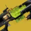
2 套寄生虫 双精确重击霰弹枪 #13 · 10108 DPS
更新 2026.11.8猎人·烈日AegismetaS29 输出手法排行第 13 名（通用 · 卡尔）：核心 DPS 10108，结束总伤 311037（34.1s）。预先叠满转向与增伤 Perk，123 切枪循环，无第二次超能
审核意见【定位与环境】S29 全职业输出手法 DPS 排行第 13 名（通用手法 · 打空弹药或关键资源后结束）｜测试首领：卡尔｜关键神器模组：极限突破、动能合成 【输出指标】核心 DPS 10108（稳定拟合区间 7.250s–18.375s）｜结束 DPS 9115｜结束时间 34.1s｜结束总伤 311037｜分段均值：10s 12441 / 20s 10635 / 30s 9365 【手法要点】预先叠满转向与增伤 Perk，123 切枪循环，无第二次超能01配装 1 · 起手超能与前置（加拉诺碎片）输出加拉诺碎片·寄生虫·利刃弹幕02配装 2 · 主输出循环（命运眷顾）输出命运眷顾·寄生虫·利刃弹幕 -
 2 套
2 套真相 #17 · 9490 DPS
更新 2026.11.8猎人·烈日AegismetaS29 输出手法排行第 17 名（通用 · 卡尔）：核心 DPS 9490，结束总伤 175384（17.5s）。前 3 发火箭未吃命运眷顾，冲刺取消加快开镜，预先备好收割者贡品 x4 与原型真理探索者
审核意见【定位与环境】S29 全职业输出手法 DPS 排行第 17 名（通用手法 · 打空弹药或关键资源后结束）｜测试首领：卡尔｜关键神器模组：极限突破、银白重炮｜团队与环境因素：瓦解 【输出指标】核心 DPS 9490（稳定拟合区间 3.125s–17.500s）｜结束 DPS 10022｜结束时间 17.5s｜结束总伤 175384｜分段均值：10s 9923 【手法要点】前 3 发火箭未吃命运眷顾，冲刺取消加快开镜，预先备好收割者贡品 x4 与原型真理探索者01配装 1 · 起手超能与前置（加拉诺碎片）输出加拉诺碎片·真相·利刃弹幕02配装 2 · 主输出循环（命运眷顾）输出命运眷顾·真相·利刃弹幕 -
2 套
牵引器火炮 混乱无序切枪 #70 · 4904 DPS
更新 2026.11.8猎人·棱镜AegismetaS29 输出手法排行第 70 名（支援 · 卡尔）：核心 DPS 4904，结束总伤 273373（49.8s）。靠陷阱炸弹与统御琢面磁性手雷延长牵引器火炮减益，其余中规中矩，最末段黄金枪释放偏慢
审核意见【定位与环境】S29 全职业输出手法 DPS 排行第 70 名（支援手法 · 打空弹药或关键资源后结束）｜测试首领：卡尔｜关键神器模组：极限突破、电弧复合、视网膜灼烧、动能冲击｜团队与环境因素：瓦解、牵引器火炮 【输出指标】核心 DPS 4904（稳定拟合区间 12.375s–27.750s）｜结束 DPS 5495｜结束时间 49.8s｜结束总伤 273373｜分段均值：10s 6746 / 20s 6568 / 30s 6035 / 40s 5547 / 50s 5467 【手法要点】靠陷阱炸弹与统御琢面磁性手雷延长牵引器火炮减益，其余中规中矩，最末段黄金枪释放偏慢01配装 1 · 起手超能与前置（星界夜鹰）输出星界夜鹰·牵引器火炮·黄金枪：神枪手02配装 2 · 主输出循环（命运眷顾）输出命运眷顾·混乱无序·黄金枪：神枪手 -
 5 套
5 套合集·常用猎人火刀手
+2 套阶段更新 2026.9.24猎人·烈日小棒猪meta01混乱无序裁决定论（1）推推烈日加拉诺碎片·牵引器火炮·利刃弹幕02混乱无序裁决定论（2）输出转大招烈日快速装弹松身裤·混乱无序·利刃弹幕03混乱无序裁决定论（3）再次火刀烈日加拉诺碎片·混乱无序·利刃弹幕 -

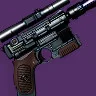
8 套合集·虚空猎人三箭
+5 套阶段更新 2026.9.24猎人·虚空小棒猪meta01需求层级三箭虚空奥菲斯钻机·需求层级·暗影箭矢：莫比乌斯箭袋02利维坦三箭 （1）虚空命运眷顾·利维坦之息·暗影箭矢：莫比乌斯箭袋03利维坦三箭 （2） 切装①虚空幸运裤·混乱无序·暗影箭矢：莫比乌斯箭袋 -
3 套
火刀猎狼毒输出配装合集
更新 2026.9.10猎人·烈日MK_D2#7555meta用这套输出的人越多越强，一波输出保底转两个大招。
01红衣威尔+韦兰迪夫清怪走机制机制命运眷顾·狼毒·利刃弹幕02加拉诺甩大招配装输出加拉诺碎片·狼毒·利刃弹幕03鱼人腿狼毒转超能配装输出噬星者之鳞·狼毒·利刃弹幕 -
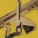
4 套猎人沙漠专用六边形战士
+1 套阶段更新 2026.9.10猎人·烈日AKfro#9237meta不只是沙漠吧，只要是能靠近的首领都可以用这套
01机制套机制命运眷顾·单人合唱·利刃弹幕02输出前捡子弹套装机制加拉诺碎片·混乱无序·利刃弹幕03输出套（大招）输出加拉诺碎片·混乱无序·利刃弹幕 -

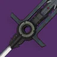
2 套史赛克的老练 #24 · 7191 DPS
更新 2026.11.8猎人·烈日Aegis强力S29 输出手法排行第 24 名（专精 · 卡尔）：核心 DPS 7191，结束总伤 197295（22.4s）。预先叠满狂暴 x3 与转向，1 重 1 轻连段接超能再打预压砥砺刀锋的伊邪那岐的重担；另试过利刃专注 1 重 2 轻，可提一下失重引力子刀剑玩法
审核意见【定位与环境】S29 全职业输出手法 DPS 排行第 24 名（专精手法 · 打空弹药或关键资源后结束）｜测试首领：卡尔｜关键神器模组：银白利刃、极限突破 【输出指标】核心 DPS 7191（稳定拟合区间 1.625s–16.875s）｜结束 DPS 8818｜结束时间 22.4s｜结束总伤 197295｜分段均值：10s 8191 / 20s 7096 【手法要点】预先叠满狂暴 x3 与转向，1 重 1 轻连段接超能再打预压砥砺刀锋的伊邪那岐的重担；另试过利刃专注 1 重 2 轻，可提一下失重引力子刀剑玩法01配装 1 · 起手超能与前置（命运眷顾）输出命运眷顾·伊邪那岐的重担·利刃弹幕02配装 2 · 主输出循环（加拉诺碎片）输出加拉诺碎片·伊邪那岐的重担·利刃弹幕 -
2 套
冷酷无情 #33 · 6717 DPS
更新 2026.11.8猎人·烈日Aegis强力S29 输出手法排行第 33 名（通用 · 卡尔）：核心 DPS 6717，结束总伤 140469（20.1s）。预先双杀触发加成，配合刺激的低语填装
审核意见【定位与环境】S29 全职业输出手法 DPS 排行第 33 名（通用手法 · 打空弹药或关键资源后结束）｜测试首领：卡尔｜关键神器模组：极限突破 【输出指标】核心 DPS 6717（稳定拟合区间 7.000s–19.250s）｜结束 DPS 6980｜结束时间 20.1s｜结束总伤 140469｜分段均值：10s 7585 / 20s 6908 【手法要点】预先双杀触发加成，配合刺激的低语填装01配装 1 · 起手超能与前置（加拉诺碎片）输出加拉诺碎片·冷酷无情·利刃弹幕02配装 2 · 主输出循环（命运眷顾）输出命运眷顾·冷酷无情·利刃弹幕 -
2 套
寄生虫 双攻击型框架霰弹枪 #37 · 6596 DPS
更新 2026.11.8猎人·烈日Aegis强力S29 输出手法排行第 37 名（专精 · 卡尔）：核心 DPS 6596，结束总伤 323077（42.9s）。123 切枪打身体，靠两段飞刀充能与手雷触发仁慈余烬，赶在霰弹枪轮次前转好闪身
审核意见【定位与环境】S29 全职业输出手法 DPS 排行第 37 名（专精手法 · 打空弹药或关键资源后结束）｜测试首领：卡尔｜关键神器模组：极限突破、动能合成 【输出指标】核心 DPS 6596（稳定拟合区间 6.375s–38.000s）｜结束 DPS 7535｜结束时间 42.9s｜结束总伤 323077｜分段均值：10s 9923 / 20s 8423 / 30s 7692 / 40s 7442 【手法要点】123 切枪打身体，靠两段飞刀充能与手雷触发仁慈余烬，赶在霰弹枪轮次前转好闪身01配装 1 · 起手超能与前置（加拉诺碎片）输出加拉诺碎片·寄生虫·利刃弹幕02配装 2 · 主输出循环（命运眷顾）输出命运眷顾·寄生虫·利刃弹幕 -
2 套
寄生虫 威胁等级 #38 · 6280 DPS
更新 2026.11.8猎人·烈日Aegis强力S29 输出手法排行第 38 名（通用 · 卡尔）：核心 DPS 6280，结束总伤 531773（80.0s）。本可用命运眷顾，每次激活级联点打约 11 发威胁等级，每约 2 次激活补一发寄生虫
审核意见【定位与环境】S29 全职业输出手法 DPS 排行第 38 名（通用手法 · 停表后仍可继续维持循环）｜测试首领：卡尔｜关键神器模组：极限突破、动能合成｜团队与环境因素：神圣裁决、瓦解 【输出指标】核心 DPS 6280（稳定拟合区间 19.375s–39.625s）｜结束 DPS 6647｜结束时间 80.0s｜结束总伤 531773｜分段均值：10s 10635 / 20s 8227 / 30s 7625 / 40s 7324 / 50s 6943 / 60s 6656 【手法要点】本可用命运眷顾，每次激活级联点打约 11 发威胁等级，每约 2 次激活补一发寄生虫01配装 1 · 起手超能与前置（加拉诺碎片）输出加拉诺碎片·寄生虫·利刃弹幕02配装 2 · 主输出循环（快速装弹松身裤）输出快速装弹松身裤·寄生虫·利刃弹幕 -
2 套
遗赠 #39 · 6264 DPS
更新 2026.11.8猎人·烈日Aegis强力S29 输出手法排行第 39 名（通用 · 卡尔）：核心 DPS 6264，结束总伤 364615（51.6s）。靠其他武器与瓦解维持元素磨砺 x5，1 重 1 轻连段，为攒出第二次超能频繁闪身导致核心 DPS 偏低
审核意见【定位与环境】S29 全职业输出手法 DPS 排行第 39 名（通用手法 · 打空弹药或关键资源后结束）｜测试首领：卡尔｜关键神器模组：极限突破、银白利刃｜团队与环境因素：集群猎人、瓦解 【输出指标】核心 DPS 6264（稳定拟合区间 40.625s–49.375s）｜结束 DPS 7063｜结束时间 51.6s｜结束总伤 364615｜分段均值：10s 7385 / 20s 8192 / 30s 7692 / 40s 7442 / 50s 7062 【手法要点】靠其他武器与瓦解维持元素磨砺 x5，1 重 1 轻连段，为攒出第二次超能频繁闪身导致核心 DPS 偏低01配装 1 · 起手超能与前置（加拉诺碎片）输出加拉诺碎片·庆典飞行·利刃弹幕02配装 2 · 主输出循环（命运眷顾）输出命运眷顾·驱逐引擎·利刃弹幕 -
2 套
狼毒 #41 · 6194 DPS
更新 2026.11.8猎人·烈日Aegis强力S29 输出手法排行第 41 名（通用 · 卡尔）：核心 DPS 6194，结束总伤 392308（67.4s）。10 次轻击充能接切枪取消连段，有时多挥几刀以加快攒满能量槽
审核意见【定位与环境】S29 全职业输出手法 DPS 排行第 41 名（通用手法 · 打空弹药或关键资源后结束）｜测试首领：卡尔｜关键神器模组：极限突破、银白利刃、烈日爆发｜团队与环境因素：瓦解 【输出指标】核心 DPS 6194（稳定拟合区间 25.875s–41.625s）｜结束 DPS 5823｜结束时间 67.4s｜结束总伤 392308｜分段均值：10s 7615 / 20s 6577 / 30s 6000 / 40s 6173 / 50s 6138 / 60s 5885 【手法要点】10 次轻击充能接切枪取消连段，有时多挥几刀以加快攒满能量槽01配装 1 · 起手超能与前置（加拉诺碎片）输出加拉诺碎片·狼毒·利刃弹幕02配装 2 · 主输出循环（命运眷顾）输出命运眷顾·狼毒·利刃弹幕 -
2 套
混乱无序 裁决定论 #43 · 6150 DPS
更新 2026.11.8猎人·烈日Aegis强力S29 输出手法排行第 43 名（通用 · 卡尔）：核心 DPS 6150，结束总伤 273373（40.3s）。聚合充能 + 战嚎炮管，若换用特技闪身可提高仁慈余烬覆盖率以攒出第二次超能
审核意见【定位与环境】S29 全职业输出手法 DPS 排行第 43 名（通用手法 · 打空弹药或关键资源后结束）｜测试首领：卡尔｜关键神器模组：极限突破、电弧复合、视网膜灼烧、动能冲击｜团队与环境因素：瓦解、牵引器火炮 【输出指标】核心 DPS 6150（稳定拟合区间 23.125s–37.000s）｜结束 DPS 6792｜结束时间 40.3s｜结束总伤 273373｜分段均值：10s 8343 / 20s 7456 / 30s 6686 / 40s 6790 【手法要点】聚合充能 + 战嚎炮管，若换用特技闪身可提高仁慈余烬覆盖率以攒出第二次超能01配装 1 · 起手超能与前置（加拉诺碎片）输出加拉诺碎片·混乱无序·利刃弹幕02配装 2 · 主输出循环（命运眷顾）输出命运眷顾·混乱无序·利刃弹幕 -
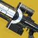
2 套伊邪那岐的重担 翻新 A499 #45 · 6106 DPS
更新 2026.11.8猎人·烈日Aegis强力S29 输出手法排行第 45 名（通用 · 卡尔）：核心 DPS 6106，结束总伤 491640（78.6s）。未用命运眷顾，但快速装弹松身裤自动拾取弹药砖极其稳定，动能裂口极不稳定
审核意见【定位与环境】S29 全职业输出手法 DPS 排行第 45 名（通用手法 · 停表后仍可继续维持循环）｜测试首领：卡尔｜关键神器模组：极限突破、狙击手冥想、动能合成｜团队与环境因素：神圣裁决、瓦解 【输出指标】核心 DPS 6106（稳定拟合区间 6.125s–72.250s）｜结束 DPS 6253｜结束时间 78.6s｜结束总伤 491640｜分段均值：10s 8428 / 20s 6522 / 30s 6890 / 40s 6321 / 50s 6502 / 60s 6254 【手法要点】未用命运眷顾，但快速装弹松身裤自动拾取弹药砖极其稳定，动能裂口极不稳定01配装 1 · 起手超能与前置（加拉诺碎片）输出加拉诺碎片·伊邪那岐的重担·利刃弹幕02配装 2 · 主输出循环（快速装弹松身裤）输出快速装弹松身裤·伊邪那岐的重担·利刃弹幕 -
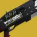
2 套阿克瑞斯传说 #46 · 6028 DPS
更新 2026.11.8猎人·烈日Aegis强力S29 输出手法排行第 46 名（通用 · 卡尔）：核心 DPS 6028，结束总伤 205384（34.8s）。仅叠 2 层聚合充能，用追踪步枪触发视网膜灼烧
审核意见【定位与环境】S29 全职业输出手法 DPS 排行第 46 名（通用手法 · 打空弹药或关键资源后结束）｜测试首领：卡尔｜关键神器模组：极限突破、电弧复合、视网膜灼烧 【输出指标】核心 DPS 6028（稳定拟合区间 6.375s–23.375s）｜结束 DPS 5910｜结束时间 34.8s｜结束总伤 205384｜分段均值：10s 7615 / 20s 6577 / 30s 6154 【手法要点】仅叠 2 层聚合充能，用追踪步枪触发视网膜灼烧01配装 1 · 起手超能与前置（加拉诺碎片）输出加拉诺碎片·阿克瑞斯传说·利刃弹幕02配装 2 · 主输出循环（命运眷顾）输出命运眷顾·阿克瑞斯传说·利刃弹幕 -
2 套
破冰者 光芒复仇 #48 · 6000 DPS
更新 2026.11.8猎人·烈日Aegis强力S29 输出手法排行第 48 名（通用 · 卡尔）：核心 DPS 6000，结束总伤 220735（27.3s）。123 切枪循环，每 2 发火箭闪身一次
审核意见【定位与环境】S29 全职业输出手法 DPS 排行第 48 名（通用手法 · 打空弹药或关键资源后结束）｜测试首领：卡尔｜关键神器模组：极限突破、银白重炮、烈焰之心｜团队与环境因素：神圣裁决、加拉尔号角、瓦解 【输出指标】核心 DPS 6000（稳定拟合区间 6.375s–21.500s）｜结束 DPS 8100｜结束时间 27.3s｜结束总伤 220735｜分段均值：10s 9632 / 20s 7625 【手法要点】123 切枪循环，每 2 发火箭闪身一次01配装 1 · 起手超能与前置（加拉诺碎片）输出加拉诺碎片·破冰者·利刃弹幕02配装 2 · 主输出循环（快速装弹松身裤）输出快速装弹松身裤·破冰者·利刃弹幕 -
2 套
千语 #49 · 5956 DPS
更新 2026.11.8猎人·烈日Aegis强力S29 输出手法排行第 49 名（通用 · 卡尔）：核心 DPS 5956，结束总伤 165089（30.9s）。带骨灰余烬实现每发必点燃，无需冲刺取消
审核意见【定位与环境】S29 全职业输出手法 DPS 排行第 49 名（通用手法 · 打空弹药或关键资源后结束）｜测试首领：卡尔｜关键神器模组：极限突破、粒子重建｜团队与环境因素：瓦解、牵引器火炮 【输出指标】核心 DPS 5956（稳定拟合区间 5.000s–23.750s）｜结束 DPS 5347｜结束时间 30.9s｜结束总伤 165089｜分段均值：10s 7633 / 20s 6834 / 30s 5444 【手法要点】带骨灰余烬实现每发必点燃，无需冲刺取消01配装 1 · 起手超能与前置（加拉诺碎片）输出加拉诺碎片·千语·利刃弹幕02配装 2 · 主输出循环（命运眷顾）输出命运眷顾·千语·利刃弹幕 -
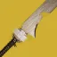
2 套故我在 #51 · 5817 DPS
更新 2026.11.8猎人·棱镜Aegis强力S29 输出手法排行第 51 名（通用 · 卡尔）：核心 DPS 5817，结束总伤 325385（78.8s）。意外缓刑涡流框架，1 重 2 轻连段，结束后用暗影武器攒回超凡
审核意见【定位与环境】S29 全职业输出手法 DPS 排行第 51 名（通用手法 · 停表后仍可继续维持循环）｜测试首领：卡尔｜关键神器模组：极限突破、银白利刃、护盾粉碎｜团队与环境因素：集群猎人 【输出指标】核心 DPS 5817（稳定拟合区间 32.500s–39.500s）｜结束 DPS 4132｜结束时间 78.8s｜结束总伤 325385｜分段均值：10s 5769 / 20s 5077 / 30s 4385 / 40s 4788 / 50s 4569 / 60s 4231 【手法要点】意外缓刑涡流框架，1 重 2 轻连段，结束后用暗影武器攒回超凡01配装 1 · 起手超能与前置（星界夜鹰）输出星界夜鹰·故我在·黄金枪：神枪手02配装 2 · 主输出循环（命运眷顾）输出命运眷顾·故我在·黄金枪：神枪手 -
2 套
混乱无序 快速增长 #55 · 5470 DPS
更新 2026.11.8猎人·烈日Aegis强力S29 输出手法排行第 55 名（通用 · 卡尔）：核心 DPS 5470，结束总伤 262876（45.6s）。每隔一次事不过四触发手动填装一回
审核意见【定位与环境】S29 全职业输出手法 DPS 排行第 55 名（通用手法 · 打空弹药或关键资源后结束）｜测试首领：卡尔｜关键神器模组：极限突破、电弧复合、视网膜灼烧、动能冲击｜团队与环境因素：神圣裁决、瓦解 【输出指标】核心 DPS 5470（稳定拟合区间 31.750s–40.375s）｜结束 DPS 5762｜结束时间 45.6s｜结束总伤 262876｜分段均值：10s 8629 / 20s 6221 / 30s 5753 / 40s 5569 【手法要点】每隔一次事不过四触发手动填装一回01配装 1 · 起手超能与前置（加拉诺碎片）输出加拉诺碎片·混乱无序·利刃弹幕02配装 2 · 主输出循环（命运眷顾）输出命运眷顾·混乱无序·利刃弹幕 -
 2 套
2 套三色矛头蝮-4bl #56 · 5460 DPS
更新 2026.11.8猎人·烈日Aegis强力S29 输出手法排行第 56 名（通用 · 卡尔）：核心 DPS 5460，结束总伤 287574（46.0s）。燃烧野心 + 聚合充能，全程 1 重 2 轻连发
审核意见【定位与环境】S29 全职业输出手法 DPS 排行第 56 名（通用手法 · 打空弹药或关键资源后结束）｜测试首领：卡尔｜关键神器模组：极限突破、银白利刃、烈日爆发｜团队与环境因素：牵引器火炮、瓦解 【输出指标】核心 DPS 5460（稳定拟合区间 15.750s–28.125s）｜结束 DPS 6252｜结束时间 46.0s｜结束总伤 287574｜分段均值：10s 7633 / 20s 6923 / 30s 6509 / 40s 6346 【手法要点】燃烧野心 + 聚合充能，全程 1 重 2 轻连发01配装 1 · 起手超能与前置（命运眷顾）输出命运眷顾·伊邪那岐的重担·利刃弹幕02配装 2 · 主输出循环（命运眷顾）输出命运眷顾·机巧纬线·利刃弹幕 -
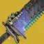
2 套挽歌 #57 · 5373 DPS
更新 2026.11.8猎人·烈日Aegis强力S29 输出手法排行第 57 名（通用 · 卡尔）：核心 DPS 5373，结束总伤 318461（53.5s）。重复 2 轻 1 重连段，略微放慢节奏避免第 4 轮连段能量不足
审核意见【定位与环境】S29 全职业输出手法 DPS 排行第 57 名（通用手法 · 打空弹药或关键资源后结束）｜测试首领：卡尔｜关键神器模组：极限突破、银白利刃、烈日爆发｜团队与环境因素：瓦解 【输出指标】核心 DPS 5373（稳定拟合区间 14.125s–38.875s）｜结束 DPS 5953｜结束时间 53.5s｜结束总伤 318461｜分段均值：10s 8077 / 20s 6692 / 30s 6154 / 40s 5942 / 50s 5908 【手法要点】重复 2 轻 1 重连段，略微放慢节奏避免第 4 轮连段能量不足01配装 1 · 起手超能与前置（加拉诺碎片）输出加拉诺碎片·挽歌·利刃弹幕02配装 2 · 主输出循环（命运眷顾）输出命运眷顾·挽歌·利刃弹幕 -
2 套
混乱无序 无礼言论 #58 · 5327 DPS
更新 2026.11.8猎人·烈日Aegis强力S29 输出手法排行第 58 名（专精 · 卡尔）：核心 DPS 5327，结束总伤 274916（47.4s）。收尾偏慢且诱导推销阴谋淬砺穿插不够完美，但依然很有代表性
审核意见【定位与环境】S29 全职业输出手法 DPS 排行第 58 名（专精手法 · 打空弹药或关键资源后结束）｜测试首领：卡尔｜关键神器模组：极限突破、电弧复合、视网膜灼烧、动能冲击｜团队与环境因素：神圣裁决 【输出指标】核心 DPS 5327（稳定拟合区间 4.500s–28.625s）｜结束 DPS 5803｜结束时间 47.4s｜结束总伤 274916｜分段均值：10s 10836 / 20s 7023 / 30s 6890 / 40s 6120 【手法要点】收尾偏慢且诱导推销阴谋淬砺穿插不够完美，但依然很有代表性01配装 1 · 起手超能与前置（加拉诺碎片）输出加拉诺碎片·混乱无序·利刃弹幕02配装 2 · 主输出循环（幸运裤）输出幸运裤·混乱无序·利刃弹幕 -
2 套
监护人 #59 · 5296 DPS
更新 2026.11.8猎人·烈日Aegis强力S29 输出手法排行第 59 名（通用 · 卡尔）：核心 DPS 5296，结束总伤 451506（79.9s）。在非神圣裁决首领上定制特机套装有翻倍加成，其余就是贴脸站在弹药砖范围内按住左键，穿插闪身与区域拒止榴弹攒超能
审核意见【定位与环境】S29 全职业输出手法 DPS 排行第 59 名（通用手法 · 停表后仍可继续维持循环）｜测试首领：卡尔｜关键神器模组：极限突破、动能合成｜团队与环境因素：神圣裁决 【输出指标】核心 DPS 5296（稳定拟合区间 56.125s–65.500s）｜结束 DPS 5653｜结束时间 79.9s｜结束总伤 451506｜分段均值：10s 7826 / 20s 6321 / 30s 6020 / 40s 5920 / 50s 5739 / 60s 5786 【手法要点】在非神圣裁决首领上定制特机套装有翻倍加成，其余就是贴脸站在弹药砖范围内按住左键，穿插闪身与区域拒止榴弹攒超能01配装 1 · 起手超能与前置（加拉诺碎片）输出加拉诺碎片·监护人·利刃弹幕02配装 2 · 主输出循环（命运眷顾）输出命运眷顾·监护人·利刃弹幕 -
2 套
寄生虫 阴谋淬砺 #60 · 5204 DPS
更新 2026.11.8猎人·烈日Aegis强力S29 输出手法排行第 60 名（通用 · 卡尔）：核心 DPS 5204，结束总伤 298997（45.9s）。诱导推销覆盖率良好，多次双发寄生虫
审核意见【定位与环境】S29 全职业输出手法 DPS 排行第 60 名（通用手法 · 打空弹药或关键资源后结束）｜测试首领：卡尔｜关键神器模组：极限突破、狙击手冥想｜团队与环境因素：神圣裁决、瓦解 【输出指标】核心 DPS 5204（稳定拟合区间 6.000s–23.625s）｜结束 DPS 6518｜结束时间 45.9s｜结束总伤 298997｜分段均值：10s 9431 / 20s 7425 / 30s 6823 / 40s 6321 【手法要点】诱导推销覆盖率良好，多次双发寄生虫01配装 1 · 起手超能与前置（加拉诺碎片）输出加拉诺碎片·寄生虫·利刃弹幕02配装 2 · 主输出循环（命运眷顾）输出命运眷顾·寄生虫·利刃弹幕 -
2 套
寄生虫 巴拉巴拉 #61 · 5159 DPS
更新 2026.11.8猎人·烈日Aegis强力S29 输出手法排行第 61 名（通用 · 卡尔）：核心 DPS 5159，结束总伤 443479（79.9s）。命运眷顾覆盖率一般，整体表现与普莱蒂斯的复仇基本一致
审核意见【定位与环境】S29 全职业输出手法 DPS 排行第 61 名（通用手法 · 停表后仍可继续维持循环）｜测试首领：卡尔｜关键神器模组：极限突破、狙击手冥想、动能合成｜团队与环境因素：神圣裁决 【输出指标】核心 DPS 5159（稳定拟合区间 12.250s–43.750s）｜结束 DPS 5552｜结束时间 79.9s｜结束总伤 443479｜分段均值：10s 9231 / 20s 6923 / 30s 6421 / 40s 6120 / 50s 5779 / 60s 5786 【手法要点】命运眷顾覆盖率一般，整体表现与普莱蒂斯的复仇基本一致01配装 1 · 起手超能与前置（加拉诺碎片）输出加拉诺碎片·寄生虫·利刃弹幕02配装 2 · 主输出循环（命运眷顾）输出命运眷顾·寄生虫·利刃弹幕 -
2 套
弑后者 #63 · 5121 DPS
更新 2026.11.8猎人·烈日Aegis强力S29 输出手法排行第 63 名（通用 · 卡尔）：核心 DPS 5121，结束总伤 228763（43.3s）。第二次超能释放偏晚，难再抠出更高伤害，手感略别扭但整体属常规打法
审核意见【定位与环境】S29 全职业输出手法 DPS 排行第 63 名（通用手法 · 打空弹药或关键资源后结束）｜测试首领：卡尔｜关键神器模组：极限突破、电弧复合、视网膜灼烧｜团队与环境因素：神圣裁决、瓦解 【输出指标】核心 DPS 5121（稳定拟合区间 17.750s–31.250s）｜结束 DPS 5289｜结束时间 43.3s｜结束总伤 228763｜分段均值：10s 8428 / 20s 5819 / 30s 5619 / 40s 5167 【手法要点】第二次超能释放偏晚，难再抠出更高伤害，手感略别扭但整体属常规打法01配装 1 · 起手超能与前置（加拉诺碎片）输出加拉诺碎片·弑后者·利刃弹幕02配装 2 · 主输出循环（命运眷顾）输出命运眷顾·弑后者·利刃弹幕 -
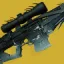
2 套蠕虫低语 #64 · 5088 DPS
更新 2026.11.8猎人·烈日Aegis强力S29 输出手法排行第 64 名（通用 · 卡尔）：核心 DPS 5088，结束总伤 212308（37.3s）。全程按住左键连射，无特殊细节
审核意见【定位与环境】S29 全职业输出手法 DPS 排行第 64 名（通用手法 · 打空弹药或关键资源后结束）｜测试首领：卡尔｜关键神器模组：极限突破、狙击手冥想、燃烧步枪弹药、烈日爆发｜团队与环境因素：瓦解 【输出指标】核心 DPS 5088（稳定拟合区间 5.000s–36.750s）｜结束 DPS 5700｜结束时间 37.3s｜结束总伤 212308｜分段均值：10s 6923 / 20s 6231 / 30s 5846 【手法要点】全程按住左键连射，无特殊细节01配装 1 · 起手超能与前置（加拉诺碎片）输出加拉诺碎片·蠕虫低语·利刃弹幕02配装 2 · 主输出循环（命运眷顾）输出命运眷顾·蠕虫低语·利刃弹幕 -
2 套
加拉尔号角 阴谋淬砺 #84 · 4039 DPS
更新 2026.11.8猎人·烈日Aegis强力S29 输出手法排行第 84 名（支援 · 卡尔）：核心 DPS 4039，结束总伤 240803（46.8s）。「加拉尔号角 → 区域拒止榴弹 → 2 发阴谋淬砺」循环
审核意见【定位与环境】S29 全职业输出手法 DPS 排行第 84 名（支援手法 · 打空弹药或关键资源后结束）｜测试首领：卡尔｜关键神器模组：极限突破、狙击手冥想｜团队与环境因素：神圣裁决、瓦解 【输出指标】核心 DPS 4039（稳定拟合区间 6.250s–29.625s）｜结束 DPS 5151｜结束时间 46.8s｜结束总伤 240803｜分段均值：10s 8027 / 20s 6020 / 30s 5351 / 40s 5418 【手法要点】「加拉尔号角 → 区域拒止榴弹 → 2 发阴谋淬砺」循环01配装 1 · 起手超能与前置（加拉诺碎片）输出加拉诺碎片·加拉尔号角·利刃弹幕02配装 2 · 主输出循环（快速装弹松身裤）输出快速装弹松身裤·加拉尔号角·利刃弹幕 -
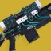
2 套D.A.R.C.I #98 · 3196 DPS
更新 2026.11.8猎人·烈日Aegis强力S29 输出手法排行第 98 名（支援 · 卡尔）：核心 DPS 3196，结束总伤 282943（69.3s）。打空一整梭 D.A.R.C.I 后接两次事不过四、一发区域拒止榴弹，再重新标记打几发 D.A.R.C.I，本可改用命运眷顾
审核意见【定位与环境】S29 全职业输出手法 DPS 排行第 98 名（支援手法 · 打空弹药或关键资源后结束）｜测试首领：卡尔｜关键神器模组：极限突破、狙击手冥想｜团队与环境因素：神圣裁决、瓦解 【输出指标】核心 DPS 3196（稳定拟合区间 7.625s–36.750s）｜结束 DPS 4086｜结束时间 69.3s｜结束总伤 282943｜分段均值：10s 7826 / 20s 5217 / 30s 4482 / 40s 4314 / 50s 4094 / 60s 4181 【手法要点】打空一整梭 D.A.R.C.I 后接两次事不过四、一发区域拒止榴弹，再重新标记打几发 D.A.R.C.I，本可改用命运眷顾01配装 1 · 起手超能与前置（加拉诺碎片）输出加拉诺碎片·D.A.R.C.I·利刃弹幕02配装 2 · 主输出循环（快速装弹松身裤）输出快速装弹松身裤·D.A.R.C.I·利刃弹幕 -
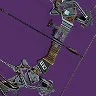
3 套猎人日志solo见证者配装
更新 2026.9.10猎人·棱镜超新星强力适合手残修不来扣子的小猪（比如我）
审核意见作者使用猎人日志的目的是方便修扣子，如果使用其他方式修扣子（比如无礼言论），则推荐使用女王兰香炉（单人特工+银白重炮），输出伤害高很多。01修扣子机制光辉跳舞机·隐秘追猎·黄金枪：神枪手02机制机制光辉跳舞机·隐秘追猎·黄金枪：神枪手03输出输出星界夜鹰·隐秘追猎·黄金枪：神枪手 -
2 套
混乱无序 舵手 #68 · 4963 DPS
更新 2026.11.8猎人·烈日Aegis创意S29 输出手法排行第 68 名（通用 · 卡尔）：核心 DPS 4963，结束总伤 437458（77.8s）。几乎每发都做冲刺取消，但无集结屏障或月之阵营靴辅助，视网膜灼烧触发偏慢
审核意见【定位与环境】S29 全职业输出手法 DPS 排行第 68 名（通用手法 · 打空弹药或关键资源后结束）｜测试首领：卡尔｜关键神器模组：极限突破、电弧复合、视网膜灼烧、动能冲击｜团队与环境因素：神圣裁决、瓦解 【输出指标】核心 DPS 4963（稳定拟合区间 33.000s–47.875s）｜结束 DPS 5626｜结束时间 77.8s｜结束总伤 437458｜分段均值：10s 8428 / 20s 6421 / 30s 6288 / 40s 5769 / 50s 5659 / 60s 5786 【手法要点】几乎每发都做冲刺取消，但无集结屏障或月之阵营靴辅助，视网膜灼烧触发偏慢01配装 1 · 起手超能与前置（加拉诺碎片）输出加拉诺碎片·混乱无序·利刃弹幕02配装 2 · 主输出循环（命运眷顾）输出命运眷顾·混乱无序·利刃弹幕 -
2 套
千语 快速装弹松身裤 利刃弹幕连发 #69 · 4914 DPS
更新 2026.11.8猎人·烈日Aegis创意S29 输出手法排行第 69 名（专精 · 卡尔）：核心 DPS 4914，结束总伤 404449（77.9s）。超能前打一发区域拒止榴弹，机巧纬线基本没用上，循环可轻松延续至 3 分钟以上，需手动追踪计时
审核意见【定位与环境】S29 全职业输出手法 DPS 排行第 69 名（专精手法 · 停表后仍可继续维持循环）｜测试首领：卡尔｜关键神器模组：极限突破、烈日爆发 【输出指标】核心 DPS 4914（稳定拟合区间 8.000s–72.000s）｜结束 DPS 5194｜结束时间 77.9s｜结束总伤 404449｜分段均值：10s 6753 / 20s 6607 / 30s 5405 / 40s 5496 / 50s 5089 / 60s 5241 【手法要点】超能前打一发区域拒止榴弹，机巧纬线基本没用上，循环可轻松延续至 3 分钟以上，需手动追踪计时01配装 1 · 主输出循环（加拉诺碎片）输出加拉诺碎片·千语·利刃弹幕02配装 2 · 超能充能切装（快速装弹松身裤）输出快速装弹松身裤·千语·利刃弹幕 -
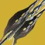
2 套寒冬之啮 #72 · 4780 DPS
更新 2026.11.8猎人·棱镜Aegis创意S29 输出手法排行第 72 名（专精 · 拉席尔）：核心 DPS 4780，结束总伤 86284（17.8s）。组合打击 x3 + 戟兵之触 + 静铃无响 + 毁灭琢面，2 轻 1 重连段
审核意见【定位与环境】S29 全职业输出手法 DPS 排行第 72 名（专精手法 · 停表后仍可继续维持循环）｜测试首领：拉席尔｜关键神器模组：静铃无响 【输出指标】核心 DPS 4780（稳定拟合区间 0.000s–17.500s）｜结束 DPS 4861｜结束时间 17.8s｜结束总伤 86284｜分段均值：10s 5032 【手法要点】组合打击 x3 + 戟兵之触 + 静铃无响 + 毁灭琢面，2 轻 1 重连段01配装 1 · 起手超能与前置（特里同之罪）输出特里同之罪·寒冬之啮·黄金枪：神枪手02配装 2 · 主输出循环（特里同之罪）输出特里同之罪·寒冬之啮·黄金枪：神枪手 -
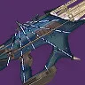
2 套揭纱露眼 #74 · 4725 DPS
更新 2026.11.8猎人·烈日Aegis创意S29 输出手法排行第 74 名（通用 · 卡尔）：核心 DPS 4725，结束总伤 408284（79.1s）。将枯萎囤积换为驱逐引擎 + 经纬仪并配合瓦解叠满元素磨砺 x5，每约两次事不过四触发切枪一轮
审核意见【定位与环境】S29 全职业输出手法 DPS 排行第 74 名（通用手法 · 停表后仍可继续维持循环）｜测试首领：卡尔｜关键神器模组：极限突破、粒子重建｜团队与环境因素：神圣裁决、牵引器火炮、瓦解 【输出指标】核心 DPS 4725（稳定拟合区间 10.125s–36.625s）｜结束 DPS 5160｜结束时间 79.1s｜结束总伤 408284｜分段均值：10s 8166 / 20s 6479 / 30s 5976 / 40s 5592 / 50s 5645 / 60s 5385 【手法要点】将枯萎囤积换为驱逐引擎 + 经纬仪并配合瓦解叠满元素磨砺 x5，每约两次事不过四触发切枪一轮01配装 1 · 起手超能与前置（加拉诺碎片）输出加拉诺碎片·庆典飞行·利刃弹幕02配装 2 · 主输出循环（命运眷顾）输出命运眷顾·驱逐引擎·利刃弹幕 -
2 套
寄生虫 普莱蒂斯的复仇 #75 · 4561 DPS
更新 2026.11.8猎人·烈日Aegis创意S29 输出手法排行第 75 名（通用 · 卡尔）：核心 DPS 4561，结束总伤 413379（80.0s）。预先拾取触发全明星，普莱蒂斯的复仇一直连射到计时快结束
审核意见【定位与环境】S29 全职业输出手法 DPS 排行第 75 名（通用手法 · 停表后仍可继续维持循环）｜测试首领：卡尔｜关键神器模组：极限突破、狙击手冥想、动能合成｜团队与环境因素：神圣裁决 【输出指标】核心 DPS 4561（稳定拟合区间 8.125s–37.625s）｜结束 DPS 5167｜结束时间 80.0s｜结束总伤 413379｜分段均值：10s 9231 / 20s 7023 / 30s 6154 / 40s 5719 / 50s 5739 / 60s 5385 【手法要点】预先拾取触发全明星，普莱蒂斯的复仇一直连射到计时快结束01配装 1 · 起手超能与前置（加拉诺碎片）输出加拉诺碎片·寄生虫·利刃弹幕02配装 2 · 主输出循环（命运眷顾）输出命运眷顾·寄生虫·利刃弹幕 -
2 套
彼岸新域 #78 · 4508 DPS
更新 2026.11.8猎人·烈日Aegis创意S29 输出手法排行第 78 名（通用 · 卡尔）：核心 DPS 4508，结束总伤 413379（79.0s）。全程冲刺取消填装后摇
审核意见【定位与环境】S29 全职业输出手法 DPS 排行第 78 名（通用手法 · 停表后仍可继续维持循环）｜测试首领：卡尔｜关键神器模组：极限突破、狙击手冥想、动能合成｜团队与环境因素：神圣裁决 【输出指标】核心 DPS 4508（稳定拟合区间 6.750s–45.250s）｜结束 DPS 5233｜结束时间 79.0s｜结束总伤 413379｜分段均值：10s 9231 / 20s 6421 / 30s 6020 / 40s 5669 / 50s 5298 / 60s 5351 【手法要点】全程冲刺取消填装后摇01配装 1 · 起手超能与前置（加拉诺碎片）输出加拉诺碎片·彼岸新域·利刃弹幕02配装 2 · 主输出循环（命运眷顾）输出命运眷顾·彼岸新域·利刃弹幕 -
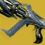
2 套库尔之影 #80 · 4286 DPS
更新 2026.11.8猎人·棱镜Aegis创意S29 输出手法排行第 80 名（专精 · 拉席尔）：核心 DPS 4286，结束总伤 52738（12.3s）。组合打击 x3 + 生物强化，受爆发伤害机制所限持续时间极短，已挂腐化射击
审核意见【定位与环境】S29 全职业输出手法 DPS 排行第 80 名（专精手法 · 停表后仍可继续维持循环）｜测试首领：拉席尔 【输出指标】核心 DPS 4286（稳定拟合区间 1.625s–12.000s）｜结束 DPS 4305｜结束时间 12.3s｜结束总伤 52738｜分段均值：10s 3994 【手法要点】组合打击 x3 + 生物强化，受爆发伤害机制所限持续时间极短，已挂腐化射击01配装 1 · 起手超能与前置（相对主义）输出相对主义·库尔之影·沉默狂啸02配装 2 · 主输出循环（相对主义）输出相对主义·库尔之影·沉默狂啸 -
 2 套
2 套狼王 #81 · 4264 DPS
更新 2026.11.8猎人·烈日Aegis创意S29 输出手法排行第 81 名（通用 · 卡尔）：核心 DPS 4264，结束总伤 182608（31.5s）。可带烈日爆发但差距不大，利用区域拒止榴弹与狼王的多段直击交互让快速装弹松身裤每个弹匣都能闪身填装
审核意见【定位与环境】S29 全职业输出手法 DPS 排行第 81 名（通用手法 · 打空弹药或关键资源后结束）｜测试首领：卡尔｜关键神器模组：极限突破｜团队与环境因素：神圣裁决、瓦解 【输出指标】核心 DPS 4264（稳定拟合区间 11.000s–28.125s）｜结束 DPS 5797｜结束时间 31.5s｜结束总伤 182608｜分段均值：10s 7625 / 20s 5920 / 30s 5284 【手法要点】可带烈日爆发但差距不大，利用区域拒止榴弹与狼王的多段直击交互让快速装弹松身裤每个弹匣都能闪身填装01配装 1 · 起手超能与前置（加拉诺碎片）输出加拉诺碎片·狼王·利刃弹幕02配装 2 · 主输出循环（快速装弹松身裤）输出快速装弹松身裤·狼王·利刃弹幕 -
 2 套
2 套英勇利刃 #82 · 4207 DPS
更新 2026.11.8猎人·烈日Aegis创意S29 输出手法排行第 82 名（通用 · 卡尔）：核心 DPS 4207，结束总伤 378461（79.8s）。标准 3 轻 1 重连段，闪身转好即用
审核意见【定位与环境】S29 全职业输出手法 DPS 排行第 82 名（通用手法 · 停表后仍可继续维持循环）｜测试首领：卡尔｜关键神器模组：极限突破、动能合成、刀剑风暴连击、组合银白利刃 【输出指标】核心 DPS 4207（稳定拟合区间 22.375s–39.000s）｜结束 DPS 4746｜结束时间 79.8s｜结束总伤 378461｜分段均值：10s 7154 / 20s 5654 / 30s 5231 / 40s 5019 / 50s 4938 / 60s 4962 【手法要点】标准 3 轻 1 重连段，闪身转好即用01配装 1 · 起手超能与前置（加拉诺碎片）输出加拉诺碎片·英勇利刃·利刃弹幕02配装 2 · 主输出循环（命运眷顾）输出命运眷顾·英勇利刃·利刃弹幕 -
 2 套
2 套阴沉利爪 #85 · 3952 DPS
更新 2026.11.8猎人·烈日Aegis创意S29 输出手法排行第 85 名（通用 · 卡尔）：核心 DPS 3952，结束总伤 263077（47.4s）。全程 1 重 2 轻连发，结束前勉强攒出第二次超能
审核意见【定位与环境】S29 全职业输出手法 DPS 排行第 85 名（通用手法 · 打空弹药或关键资源后结束）｜测试首领：卡尔｜关键神器模组：极限突破、银白利刃｜团队与环境因素：瓦解 【输出指标】核心 DPS 3952（稳定拟合区间 13.500s–27.125s）｜结束 DPS 5553｜结束时间 47.4s｜结束总伤 263077｜分段均值：10s 6692 / 20s 6115 / 30s 5308 / 40s 5365 【手法要点】全程 1 重 2 轻连发，结束前勉强攒出第二次超能01配装 1 · 起手超能与前置（加拉诺碎片）输出加拉诺碎片·庆典飞行·利刃弹幕02配装 2 · 主输出循环（命运眷顾）输出命运眷顾·庆典飞行·利刃弹幕 -
2 套
堡垒 抓钩 #87 · 3908 DPS
更新 2026.11.8猎人·棱镜Aegis创意S29 输出手法排行第 87 名（通用 · 卡尔）：核心 DPS 3908，结束总伤 313846（76.3s）。起手 200 手雷/近战切装，打满蓄力堡垒后接常规雪上加霜抓钩
审核意见【定位与环境】S29 全职业输出手法 DPS 排行第 87 名（通用手法 · 停表后仍可继续维持循环）｜测试首领：卡尔｜关键神器模组：极限突破、护盾粉碎 【输出指标】核心 DPS 3908（稳定拟合区间 8.375s–48.750s）｜结束 DPS 4116｜结束时间 76.3s｜结束总伤 313846｜分段均值：10s 6923 / 20s 5423 / 30s 4923 / 40s 4731 / 50s 4523 / 60s 4423 【手法要点】起手 200 手雷/近战切装，打满蓄力堡垒后接常规雪上加霜抓钩01配装 1 · 起手超能与前置（星界夜鹰）输出星界夜鹰·堡垒·黄金枪：神枪手02配装 2 · 主输出循环（命运眷顾）输出命运眷顾·堡垒·黄金枪：神枪手 -
2 套
缩影 #88 · 3850 DPS
更新 2026.11.8猎人·烈日Aegis创意S29 输出手法排行第 88 名（通用 · 卡尔）：核心 DPS 3850，结束总伤 200669（37.9s）。双超能延长超因果注入，靠紧身填装与仁慈余烬刷回闪身
审核意见【定位与环境】S29 全职业输出手法 DPS 排行第 88 名（通用手法 · 打空弹药或关键资源后结束）｜测试首领：卡尔｜关键神器模组：极限突破、严酷折射｜团队与环境因素：神圣裁决、瓦解 【输出指标】核心 DPS 3850（稳定拟合区间 9.250s–33.875s）｜结束 DPS 5298｜结束时间 37.9s｜结束总伤 200669｜分段均值：10s 7625 / 20s 5719 / 30s 5084 【手法要点】双超能延长超因果注入，靠紧身填装与仁慈余烬刷回闪身01配装 1 · 起手超能与前置（加拉诺碎片）输出加拉诺碎片·缩影·利刃弹幕02配装 2 · 主输出循环（命运眷顾）输出命运眷顾·缩影·利刃弹幕 -
 2 套
2 套大序曲 #91 · 3496 DPS
更新 2026.11.8猎人·烈日Aegis创意S29 输出手法排行第 91 名（通用 · 卡尔）：核心 DPS 3496，结束总伤 283846（62.6s）。仅 1 层聚合充能，用追踪步枪触发视网膜灼烧
审核意见【定位与环境】S29 全职业输出手法 DPS 排行第 91 名（通用手法 · 打空弹药或关键资源后结束）｜测试首领：卡尔｜关键神器模组：极限突破、电弧复合、视网膜灼烧、动能冲击 【输出指标】核心 DPS 3496（稳定拟合区间 6.500s–62.375s）｜结束 DPS 4532｜结束时间 62.6s｜结束总伤 283846｜分段均值：10s 8538 / 20s 5538 / 30s 5308 / 40s 4500 / 50s 4615 / 60s 4269 【手法要点】仅 1 层聚合充能，用追踪步枪触发视网膜灼烧01配装 1 · 起手超能与前置（加拉诺碎片）输出加拉诺碎片·大序曲·利刃弹幕02配装 2 · 主输出循环（命运眷顾）输出命运眷顾·大序曲·利刃弹幕 -
2 套
21% 的亢奋 #92 · 3476 DPS
更新 2026.11.8猎人·棱镜Aegis创意S29 输出手法排行第 92 名（通用 · 卡尔）：核心 DPS 3476，结束总伤 307023（79.6s）。事不过四 + 换挡 x5，用飞升填装保住层数
审核意见【定位与环境】S29 全职业输出手法 DPS 排行第 92 名（通用手法 · 停表后仍可继续维持循环）｜测试首领：卡尔｜关键神器模组：极限突破、电弧复合、视网膜灼烧、动能冲击｜团队与环境因素：神圣裁决、瓦解 【输出指标】核心 DPS 3476（稳定拟合区间 51.750s–65.875s）｜结束 DPS 3856｜结束时间 79.6s｜结束总伤 307023｜分段均值：10s 6823 / 20s 5117 / 30s 4548 / 40s 4465 / 50s 4174 / 60s 3946 【手法要点】事不过四 + 换挡 x5，用飞升填装保住层数01配装 1 · 起手超能与前置（星界夜鹰）输出星界夜鹰·庆典飞行·黄金枪：神枪手02配装 2 · 主输出循环（命运眷顾）输出命运眷顾·庆典飞行·黄金枪：神枪手 -
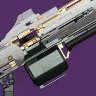
2 套时间子句 #97 · 3215 DPS
更新 2026.11.8猎人·烈日Aegis创意S29 输出手法排行第 97 名（通用 · 卡尔）：核心 DPS 3215，结束总伤 303011（79.1s）。事不过四 + 目标锁定 + 致命失误尽可能倾泻，预先叠满起源特性
审核意见【定位与环境】S29 全职业输出手法 DPS 排行第 97 名（通用手法 · 停表后仍可继续维持循环）｜测试首领：卡尔｜关键神器模组：极限突破、烈焰之心｜团队与环境因素：神圣裁决、瓦解 【输出指标】核心 DPS 3215（稳定拟合区间 13.500s–40.875s）｜结束 DPS 3830｜结束时间 79.1s｜结束总伤 303011｜分段均值：10s 7224 / 20s 5117 / 30s 4482 / 40s 4214 / 50s 4334 / 60s 4047 【手法要点】事不过四 + 目标锁定 + 致命失误尽可能倾泻，预先叠满起源特性01配装 1 · 起手超能与前置（加拉诺碎片）输出加拉诺碎片·庆典飞行·利刃弹幕02配装 2 · 主输出循环（命运眷顾）输出命运眷顾·庆典飞行·利刃弹幕
泰坦
-
 2 套
2 套叛贼 光芒复仇 #18 · 9220 DPS
更新 2026.11.8 泰坦·棱镜Aegismeta
泰坦·棱镜AegismetaS29 输出手法排行第 18 名（通用 · 卡尔）：核心 DPS 9220，结束总伤 175740（18.8s）。超能前先打一发火箭使后续弹匣凑整（4x2），依靠医疗设备 + 电击陷阱填装，基本维持 3 层传导宇宙织针
审核意见【定位与环境】S29 全职业输出手法 DPS 排行第 18 名（通用手法 · 打空弹药或关键资源后结束）｜测试首领：卡尔｜关键神器模组：雷霆反击、传导宇宙织针、银白重炮｜团队与环境因素：瓦解、牵引器火炮、集群猎人 【输出指标】核心 DPS 9220（稳定拟合区间 6.625s–18.500s）｜结束 DPS 9373｜结束时间 18.8s｜结束总伤 175740｜分段均值：10s 10118 【手法要点】超能前先打一发火箭使后续弹匣凑整（4x2），依靠医疗设备 + 电击陷阱填装，基本维持 3 层传导宇宙织针01配装 1 · 起手超能与前置（陨星胸甲）输出陨星胸甲·叛贼·雷霆冲击02配装 2 · 主输出循环（医疗设备）输出医疗设备·叛贼·雷霆冲击 -
2 套
真相 #19 · 9100 DPS
更新 2026.11.8泰坦·棱镜AegismetaS29 输出手法排行第 19 名（通用 · 卡尔）：核心 DPS 9100，结束总伤 166154（17.4s）。未测试圣人 14 号的头盔（收益不大），仅叠了约 1 层传导宇宙织针
审核意见【定位与环境】S29 全职业输出手法 DPS 排行第 19 名（通用手法 · 打空弹药或关键资源后结束）｜测试首领：卡尔｜关键神器模组：雷霆反击、传导宇宙织针、银白重炮 【输出指标】核心 DPS 9100（稳定拟合区间 3.625s–17.375s）｜结束 DPS 9563｜结束时间 17.4s｜结束总伤 166154｜分段均值：10s 9462 【手法要点】未测试圣人 14 号的头盔（收益不大），仅叠了约 1 层传导宇宙织针01配装 1 · 起手超能与前置（陨星胸甲）输出陨星胸甲·真相·雷霆冲击02配装 2 · 主输出循环（陨星胸甲）输出陨星胸甲·真相·雷霆冲击 -
 2 套
2 套集体爆破 光芒复仇 #22 · 7315 DPS
更新 2026.11.8泰坦·电弧AegismetaS29 输出手法排行第 22 名（专精 · 卡尔）：核心 DPS 7315，结束总伤 228994（35.0s）。暴雷之触脉冲手雷连发配合集束炸弹 + 集体爆破光芒复仇，穿插少量枯萎囤积与铭纹-41，超能伤害偏低（不确定增幅是否被遮挡视线）
审核意见【定位与环境】S29 全职业输出手法 DPS 排行第 22 名（专精手法 · 打空弹药或关键资源后结束）｜测试首领：卡尔｜关键神器模组：雷霆反击、传导宇宙织针、银白重炮｜团队与环境因素：瓦解、集群猎人、牵引器火炮、风暴要塞 【输出指标】核心 DPS 7315（稳定拟合区间 17.750s–27.750s）｜结束 DPS 6543｜结束时间 35.0s｜结束总伤 228994｜分段均值：10s 6746 / 20s 6923 / 30s 7101 【手法要点】暴雷之触脉冲手雷连发配合集束炸弹 + 集体爆破光芒复仇，穿插少量枯萎囤积与铭纹-41，超能伤害偏低（不确定增幅是否被遮挡视线）01配装 1 · 起手超能与前置（陨星胸甲）输出陨星胸甲·庆典飞行·雷霆冲击02配装 2 · 主输出循环（医疗设备）输出医疗设备·枯萎囤积·雷霆冲击 -
2 套
混乱无序 双后膛榴弹 #23 · 7238 DPS
更新 2026.11.8泰坦·电弧AegismetaS29 输出手法排行第 23 名（专精 · 卡尔）：核心 DPS 7238，结束总伤 228994（34.5s）。1212 切枪循环，拯救者的喝彩预先叠好换挡，机巧纬线触发诱导推销，靠暴雷之触脉冲手雷维持元素超驰
审核意见【定位与环境】S29 全职业输出手法 DPS 排行第 23 名（专精手法 · 打空弹药或关键资源后结束）｜测试首领：卡尔｜关键神器模组：雷霆反击、传导宇宙织针、元素超驰｜团队与环境因素：瓦解、风暴要塞 【输出指标】核心 DPS 7238（稳定拟合区间 27.000s–33.625s）｜结束 DPS 6638｜结束时间 34.5s｜结束总伤 228994｜分段均值：10s 8698 / 20s 6834 / 30s 6568 【手法要点】1212 切枪循环，拯救者的喝彩预先叠好换挡，机巧纬线触发诱导推销，靠暴雷之触脉冲手雷维持元素超驰01配装 1 · 起手超能与前置（陨星胸甲）输出陨星胸甲·混乱无序·雷霆冲击02配装 2 · 主输出循环（至纯光能护心甲）输出至纯光能护心甲·混乱无序·雷霆冲击 -
2 套
伊邪那岐的重担 翻新 A499 #35 · 6606 DPS
更新 2026.11.8泰坦·棱镜AegismetaS29 输出手法排行第 35 名（通用 · 卡尔）：核心 DPS 6606，结束总伤 453512（79.3s）。通常 1 发砥砺刀锋接 2 发翻新 A499，再用边打边劫食莲者拾取动能合成弹药砖，末段微调以维持平衡
审核意见【定位与环境】S29 全职业输出手法 DPS 排行第 35 名（通用手法 · 停表后仍可继续维持循环）｜测试首领：卡尔｜关键神器模组：雷霆反击、传导宇宙织针、狙击手冥想、动能合成｜团队与环境因素：神圣裁决、瓦解 【输出指标】核心 DPS 6606（稳定拟合区间 22.500s–37.875s）｜结束 DPS 5723｜结束时间 79.3s｜结束总伤 453512｜分段均值：10s 9632 / 20s 7625 / 30s 7023 / 40s 6823 / 50s 6341 / 60s 6087 【手法要点】通常 1 发砥砺刀锋接 2 发翻新 A499，再用边打边劫食莲者拾取动能合成弹药砖，末段微调以维持平衡01配装 1 · 起手超能与前置（陨星胸甲）输出陨星胸甲·伊邪那岐的重担·雷霆冲击02配装 2 · 主输出循环（陨星胸甲）输出陨星胸甲·伊邪那岐的重担·雷霆冲击 -
2 套
加拉尔号角 阴谋淬砺 #77 · 4527 DPS
更新 2026.11.8泰坦·电弧AegismetaS29 输出手法排行第 77 名（支援 · 卡尔）：核心 DPS 4527，结束总伤 196655（42.8s）。尽量均衡分配阴谋淬砺与加拉尔号角射弹以防单边提前打空，穿插少量暴雷之触闪电填装
审核意见【定位与环境】S29 全职业输出手法 DPS 排行第 77 名（支援手法 · 打空弹药或关键资源后结束）｜测试首领：卡尔｜关键神器模组：雷霆反击、传导宇宙织针、狙击手冥想｜团队与环境因素：神圣裁决、瓦解 【输出指标】核心 DPS 4527（稳定拟合区间 13.500s–22.750s）｜结束 DPS 4600｜结束时间 42.8s｜结束总伤 196655｜分段均值：10s 7224 / 20s 5819 / 30s 5084 / 40s 4766 【手法要点】尽量均衡分配阴谋淬砺与加拉尔号角射弹以防单边提前打空，穿插少量暴雷之触闪电填装01配装 1 · 起手超能与前置（陨星胸甲）输出陨星胸甲·加拉尔号角·雷霆冲击02配装 2 · 主输出循环（医疗设备）输出医疗设备·加拉尔号角·雷霆冲击 -
2 套
混乱无序 裁决定论 #50 · 5886 DPS
更新 2026.11.8泰坦·电弧Aegis强力S29 输出手法排行第 50 名（通用 · 卡尔）：核心 DPS 5886，结束总伤 284024（42.5s）。靠暴雷之触脉冲手雷触发元素超驰，常规输出，偶用雷霆一击触发战嚎炮管
审核意见【定位与环境】S29 全职业输出手法 DPS 排行第 50 名（通用手法 · 打空弹药或关键资源后结束）｜测试首领：卡尔｜关键神器模组：雷霆反击、传导宇宙织针、元素超驰｜团队与环境因素：瓦解、风暴要塞、牵引器火炮 【输出指标】核心 DPS 5886（稳定拟合区间 8.250s–35.875s）｜结束 DPS 6683｜结束时间 42.5s｜结束总伤 284024｜分段均值：10s 8876 / 20s 7101 / 30s 6509 / 40s 6701 【手法要点】靠暴雷之触脉冲手雷触发元素超驰，常规输出，偶用雷霆一击触发战嚎炮管01配装 1 · 起手超能与前置（陨星胸甲）输出陨星胸甲·混乱无序·雷霆冲击02配装 2 · 主输出循环（至纯光能护心甲）输出至纯光能护心甲·混乱无序·雷霆冲击 -
2 套
遗赠 #53 · 5657 DPS
更新 2026.11.8泰坦·电弧Aegis强力S29 输出手法排行第 53 名（通用 · 卡尔）：核心 DPS 5657，结束总伤 253846（45.4s）。大部分时间维持元素磨砺 x5，末段因缺烈日伤害掉至 x4，靠暴雷之触脉冲手雷触发元素超驰，标准 1 重 1 轻连段
审核意见【定位与环境】S29 全职业输出手法 DPS 排行第 53 名（通用手法 · 打空弹药或关键资源后结束）｜测试首领：卡尔｜关键神器模组：雷霆反击、传导宇宙织针、元素超驰｜团队与环境因素：瓦解、集群猎人、风暴要塞 【输出指标】核心 DPS 5657（稳定拟合区间 33.500s–43.125s）｜结束 DPS 5594｜结束时间 45.4s｜结束总伤 253846｜分段均值：10s 6462 / 20s 6115 / 30s 5846 / 40s 5481 【手法要点】大部分时间维持元素磨砺 x5，末段因缺烈日伤害掉至 x4，靠暴雷之触脉冲手雷触发元素超驰，标准 1 重 1 轻连段01配装 1 · 起手超能与前置（陨星胸甲）输出陨星胸甲·庆典飞行·雷霆冲击02配装 2 · 主输出循环（至纯光能护心甲）输出至纯光能护心甲·驱逐引擎·雷霆冲击 -
2 套
千语 #54 · 5544 DPS
更新 2026.11.8泰坦·电弧Aegis强力S29 输出手法排行第 54 名（通用 · 卡尔）：核心 DPS 5544，结束总伤 161538（30.4s）。末段需少量冲刺取消，另测过燃烧舞步之道，整体仍是陨星胸甲更优
审核意见【定位与环境】S29 全职业输出手法 DPS 排行第 54 名（通用手法 · 打空弹药或关键资源后结束）｜测试首领：卡尔｜关键神器模组：雷霆反击、传导宇宙织针、粒子重建｜团队与环境因素：瓦解、牵引器火炮 【输出指标】核心 DPS 5544（稳定拟合区间 5.875s–24.875s）｜结束 DPS 5318｜结束时间 30.4s｜结束总伤 161538｜分段均值：10s 7101 / 20s 6479 / 30s 5325 【手法要点】末段需少量冲刺取消，另测过燃烧舞步之道，整体仍是陨星胸甲更优01配装 1 · 起手超能与前置（陨星胸甲）输出陨星胸甲·千语·雷霆冲击02配装 2 · 主输出循环（陨星胸甲）输出陨星胸甲·千语·雷霆冲击 -
2 套
牵引器火炮 裁决定论 #79 · 4357 DPS
更新 2026.11.8泰坦·电弧Aegis强力S29 输出手法排行第 79 名（支援 · 卡尔）：核心 DPS 4357，结束总伤 214793（43.3s）。无传导宇宙织针层数，每约 2 次战嚎炮管激活补一发牵引器火炮，未带频率火花
审核意见【定位与环境】S29 全职业输出手法 DPS 排行第 79 名（支援手法 · 打空弹药或关键资源后结束）｜测试首领：卡尔｜关键神器模组：雷霆反击、传导宇宙织针、闪电过载、不稳定神枪手｜团队与环境因素：风暴要塞 【输出指标】核心 DPS 4357（稳定拟合区间 5.875s–36.375s）｜结束 DPS 4966｜结束时间 43.3s｜结束总伤 214793｜分段均值：10s 7278 / 20s 5503 / 30s 5148 / 40s 5104 【手法要点】无传导宇宙织针层数，每约 2 次战嚎炮管激活补一发牵引器火炮，未带频率火花01配装 1 · 起手超能与前置（陨星胸甲）输出陨星胸甲·牵引器火炮·雷霆冲击02配装 2 · 主输出循环（至纯光能护心甲）输出至纯光能护心甲·牵引器火炮·雷霆冲击 -
2 套
D.A.R.C.I #100 · 3160 DPS
更新 2026.11.8泰坦·棱镜Aegis强力S29 输出手法排行第 100 名（支援 · 卡尔）：核心 DPS 3160，结束总伤 226756（64.0s）。每触发两次事不过四穿插一发 D.A.R.C.I，超凡转好即开
审核意见【定位与环境】S29 全职业输出手法 DPS 排行第 100 名（支援手法 · 打空弹药或关键资源后结束）｜测试首领：卡尔｜关键神器模组：雷霆反击、传导宇宙织针、狙击手冥想｜团队与环境因素：神圣裁决、瓦解 【输出指标】核心 DPS 3160（稳定拟合区间 26.125s–36.875s）｜结束 DPS 3543｜结束时间 64.0s｜结束总伤 226756｜分段均值：10s 7625 / 20s 5318 / 30s 4348 / 40s 3863 / 50s 3652 / 60s 3612 【手法要点】每触发两次事不过四穿插一发 D.A.R.C.I，超凡转好即开01配装 1 · 起手超能与前置（陨星胸甲）输出陨星胸甲·D.A.R.C.I·雷霆冲击02配装 2 · 主输出循环（陨星胸甲）输出陨星胸甲·D.A.R.C.I·雷霆冲击 -
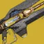
2 套神圣裁决 #103 · 1840 DPS
更新 2026.11.8泰坦·电弧Aegis强力S29 输出手法排行第 103 名（支援 · 卡尔）：核心 DPS 1840，结束总伤 134448（60.9s）。点射配合暴雷之触闪电填装，无传导宇宙织针层数，未带频率火花
审核意见【定位与环境】S29 全职业输出手法 DPS 排行第 103 名（支援手法 · 打空弹药或关键资源后结束）｜测试首领：卡尔｜关键神器模组：雷霆反击、传导宇宙织针、严酷折射、闪电过载｜团队与环境因素：神圣裁决前先挂虚弱、风暴要塞 【输出指标】核心 DPS 1840（稳定拟合区间 9.000s–26.375s）｜结束 DPS 2209｜结束时间 60.9s｜结束总伤 134448｜分段均值：10s 4615 / 20s 3211 / 30s 2542 / 40s 2408 / 50s 2288 / 60s 2140 【手法要点】点射配合暴雷之触闪电填装，无传导宇宙织针层数，未带频率火花01配装 1 · 起手超能与前置（陨星胸甲）输出陨星胸甲·神圣裁决·雷霆冲击02配装 2 · 主输出循环（医疗设备）输出医疗设备·神圣裁决·雷霆冲击 -
2 套
雷神 #83 · 4138 DPS
更新 2026.11.8泰坦·电弧Aegis创意S29 输出手法排行第 83 名（通用 · 卡尔）：核心 DPS 4138，结束总伤 174582（41.0s）。无传导宇宙织针层数，全程按住左键，未带频率火花
审核意见【定位与环境】S29 全职业输出手法 DPS 排行第 83 名（通用手法 · 打空弹药或关键资源后结束）｜测试首领：卡尔｜关键神器模组：雷霆反击、传导宇宙织针、电弧复合、视网膜灼烧｜团队与环境因素：风暴要塞 【输出指标】核心 DPS 4138（稳定拟合区间 21.250s–36.750s）｜结束 DPS 4258｜结束时间 41.0s｜结束总伤 174582｜分段均值：10s 6221 / 20s 4615 / 30s 4281 / 40s 4214 【手法要点】无传导宇宙织针层数，全程按住左键，未带频率火花01配装 1 · 起手超能与前置（陨星胸甲）输出陨星胸甲·雷神·雷霆冲击02配装 2 · 主输出循环（亚克兴角战役钻机）输出亚克兴角战役钻机·雷神·雷霆冲击 -
2 套
需求层级（指引光环） #86 · 3950 DPS
更新 2026.11.8泰坦·电弧Aegis创意S29 输出手法排行第 86 名（通用 · 科雷戈斯）：核心 DPS 3950，结束总伤 350198（79.8s）。无传导宇宙织针层数，受首领激光影响风暴要塞覆盖率存疑，未带频率火花
审核意见【定位与环境】S29 全职业输出手法 DPS 排行第 86 名（通用手法 · 停表后仍可继续维持循环）｜测试首领：科雷戈斯｜关键神器模组：雷霆反击、传导宇宙织针、银白箭袋、半自动强袭｜团队与环境因素：风暴要塞 【输出指标】核心 DPS 3950（稳定拟合区间 22.000s–41.000s）｜结束 DPS 4391｜结束时间 79.8s｜结束总伤 350198｜分段均值：10s 5370 / 20s 4844 / 30s 4630 / 40s 4407 / 50s 4296 / 60s 4416 【手法要点】无传导宇宙织针层数，受首领激光影响风暴要塞覆盖率存疑，未带频率火花01配装 1 · 起手超能与前置（陨星胸甲）输出陨星胸甲·第四骑士·雷霆冲击02配装 2 · 主输出循环（陨星胸甲）输出陨星胸甲·需求层级·雷霆冲击 -
2 套
混乱无序 超前 #90 · 3719 DPS
更新 2026.11.8泰坦·电弧Aegis创意S29 输出手法排行第 90 名（专精 · 科雷戈斯）：核心 DPS 3719，结束总伤 325684（79.8s）。双粘附后打满回转弹药再接区域拒止榴弹循环，屏障覆盖率整体良好，仅 1 层传导宇宙织针
审核意见【定位与环境】S29 全职业输出手法 DPS 排行第 90 名（专精手法 · 停表后仍可继续维持循环）｜测试首领：科雷戈斯｜关键神器模组：雷霆反击、传导宇宙织针、电弧复合、视网膜灼烧、动能冲击｜团队与环境因素：风暴要塞 【输出指标】核心 DPS 3719（稳定拟合区间 4.375s–36.375s）｜结束 DPS 4084｜结束时间 79.8s｜结束总伤 325684｜分段均值：10s 6187 / 20s 5253 / 30s 4669 / 40s 4553 / 50s 4202 / 60s 4261 【手法要点】双粘附后打满回转弹药再接区域拒止榴弹循环，屏障覆盖率整体良好，仅 1 层传导宇宙织针01配装 1 · 起手超能与前置（陨星胸甲）输出陨星胸甲·混乱无序·雷霆冲击02配装 2 · 主输出循环（陨星胸甲）输出陨星胸甲·混乱无序·雷霆冲击 -
2 套
寄生虫 无人幸存 #101 · 3078 DPS
更新 2026.11.8泰坦·电弧Aegis创意S29 输出手法排行第 101 名（专精 · 科雷戈斯）：核心 DPS 3078，结束总伤 284827（79.9s）。切枪略慢，弹匣非最理想但攻击型框架弹匣缩放本就很差（35 → 39）
审核意见【定位与环境】S29 全职业输出手法 DPS 排行第 101 名（专精手法 · 停表后仍可继续维持循环）｜测试首领：科雷戈斯｜关键神器模组：雷霆反击、传导宇宙织针、闪电过载、极限突破｜团队与环境因素：风暴要塞 【输出指标】核心 DPS 3078（稳定拟合区间 10.625s–48.625s）｜结束 DPS 3566｜结束时间 79.9s｜结束总伤 284827｜分段均值：10s 7121 / 20s 5253 / 30s 4436 / 40s 4115 / 50s 4109 / 60s 3872 【手法要点】切枪略慢，弹匣非最理想但攻击型框架弹匣缩放本就很差（35 → 39）01配装 1 · 起手超能与前置（陨星胸甲）输出陨星胸甲·寄生虫·雷霆冲击02配装 2 · 主输出循环（和平守护者）输出和平守护者·寄生虫·雷霆冲击 -
2 套
需求层级 #102 · 2438 DPS
更新 2026.11.8泰坦·电弧Aegis创意S29 输出手法排行第 102 名（通用 · 科雷戈斯）：核心 DPS 2438，结束总伤 212454（79.9s）。无传导宇宙织针层数，受首领激光影响风暴要塞覆盖率存疑，未带频率火花
审核意见【定位与环境】S29 全职业输出手法 DPS 排行第 102 名（通用手法 · 停表后仍可继续维持循环）｜测试首领：科雷戈斯｜关键神器模组：雷霆反击、传导宇宙织针、银白箭袋、半自动强袭｜团队与环境因素：风暴要塞 【输出指标】核心 DPS 2438（稳定拟合区间 40.250s–64.375s）｜结束 DPS 2660｜结束时间 79.9s｜结束总伤 212454｜分段均值：10s 4669 / 20s 3677 / 30s 3191 / 40s 3035 / 50s 2918 / 60s 2841 【手法要点】无传导宇宙织针层数，受首领激光影响风暴要塞覆盖率存疑，未带频率火花01配装 1 · 起手超能与前置（陨星胸甲）输出陨星胸甲·第四骑士·雷霆冲击02配装 2 · 主输出循环（陨星胸甲）输出陨星胸甲·需求层级·雷霆冲击 -
2 套
帝王蝶 #105 · 1696 DPS
更新 2026.11.8泰坦·电弧Aegis创意S29 输出手法排行第 105 名（专精 · 科雷戈斯）：核心 DPS 1696，结束总伤 192609（79.4s）。仅 1 层传导宇宙织针，其余基本全程腰射并按需补放屏障
审核意见【定位与环境】S29 全职业输出手法 DPS 排行第 105 名（专精手法 · 停表后仍可继续维持循环）｜测试首领：科雷戈斯｜关键神器模组：雷霆反击、传导宇宙织针、闪电过载、不稳定神枪手｜团队与环境因素：风暴要塞 【输出指标】核心 DPS 1696（稳定拟合区间 38.625s–72.375s）｜结束 DPS 2427｜结束时间 79.4s｜结束总伤 192609｜分段均值：10s 4903 / 20s 3385 / 30s 2957 / 40s 2568 / 50s 2381 / 60s 2218 【手法要点】仅 1 层传导宇宙织针，其余基本全程腰射并按需补放屏障01配装 1 · 起手超能与前置（陨星胸甲）输出陨星胸甲·帝王蝶·雷霆冲击02配装 2 · 主输出循环（陨星胸甲）输出陨星胸甲·帝王蝶·雷霆冲击
术士
-
 2 套
2 套叛贼 光芒复仇 #12 · 10158 DPS
更新 2026.11.8 术士·缚丝Aegismeta
术士·缚丝AegismetaS29 输出手法排行第 12 名（通用 · 卡尔）：核心 DPS 10158，结束总伤 149112（15.3s）。超能前先打一发火箭使后续弹匣凑整（4x2），两次上升丝线填装打满 8 发叛贼火箭
审核意见【定位与环境】S29 全职业输出手法 DPS 排行第 12 名（通用手法 · 打空弹药或关键资源后结束）｜测试首领：卡尔｜关键神器模组：集群战术、银白重炮｜团队与环境因素：瓦解、牵引器火炮、集群猎人 【输出指标】核心 DPS 10158（稳定拟合区间 4.875s–15.200s）｜结束 DPS 9778｜结束时间 15.3s｜结束总伤 149112｜分段均值：10s 9586 【手法要点】超能前先打一发火箭使后续弹匣凑整（4x2），两次上升丝线填装打满 8 发叛贼火箭01配装 1 · 起手超能与前置（血红炼金术）输出血红炼金术·叛贼·织针风暴02配装 2 · 主输出循环（血红炼金术）输出血红炼金术·叛贼·织针风暴 -
2 套
真相 #15 · 9737 DPS
更新 2026.11.8术士·棱镜AegismetaS29 输出手法排行第 15 名（通用 · 卡尔）：核心 DPS 9737，结束总伤 147692（16.0s）。指挥琢面打出了约 5 发火箭倾泻，其余为常规倾泻，冲刺取消填装不够理想；另测过织针风暴但结果相近
审核意见【定位与环境】S29 全职业输出手法 DPS 排行第 15 名（通用手法 · 打空弹药或关键资源后结束）｜测试首领：卡尔｜关键神器模组：极限突破、银白重炮｜团队与环境因素：瓦解 【输出指标】核心 DPS 9737（稳定拟合区间 4.000s–13.125s）｜结束 DPS 9231｜结束时间 16.0s｜结束总伤 147692｜分段均值：10s 9923 【手法要点】指挥琢面打出了约 5 发火箭倾泻，其余为常规倾泻，冲刺取消填装不够理想；另测过织针风暴但结果相近01配装 1 · 起手超能与前置（血红炼金术）输出血红炼金术·真相·新星炸弹：灾变02配装 2 · 主输出循环（血红炼金术）输出血红炼金术·真相·新星炸弹：灾变 -
2 套
牵引器火炮 混乱无序切枪 #65 · 4985 DPS
更新 2026.11.8术士·棱镜AegismetaS29 输出手法排行第 65 名（支援 · 卡尔）：核心 DPS 4985，结束总伤 276923（54.8s）。本可带极限突破但差距极小
审核意见【定位与环境】S29 全职业输出手法 DPS 排行第 65 名（支援手法 · 打空弹药或关键资源后结束）｜测试首领：卡尔｜关键神器模组：电弧复合、视网膜灼烧｜团队与环境因素：瓦解、牵引器火炮 【输出指标】核心 DPS 4985（稳定拟合区间 18.000s–30.000s）｜结束 DPS 5058｜结束时间 54.8s｜结束总伤 276923｜分段均值：10s 5148 / 20s 4882 / 30s 4793 / 40s 5237 / 50s 5219 【手法要点】本可带极限突破但差距极小01配装 1 · 起手超能与前置（血红炼金术）输出血红炼金术·牵引器火炮·新星炸弹：灾变02配装 2 · 主输出循环（血红炼金术）输出血红炼金术·混乱无序·新星炸弹：灾变 -
4 套
合集·火歌星界之火
+1 套阶段更新 2026.9.24术士·烈日小棒猪meta01邪冬头星界之火 （1）推推烈日牵引器火炮·烈焰之歌02邪冬头星界之火 （2）堡垒输出烈日邪冬的头盔·堡垒·烈焰之歌03督军手星界之火 （1）叠层烈日狡诈严冬·单人合唱·烈焰之歌 -
8 套
合集·易伤位
+5 套阶段更新 2026.9.24术士·烈日小棒猪meta常规队伍易伤使用
01火中术士推推裁决定论·Raid/地牢输出汇编器战靴·牵引器火炮·光焰之井02火中术士推推枯萎凝视奶枪·Raid （1）输出汇编器战靴·牵引器火炮·光焰之井03火中术士推推枯萎凝视奶枪·Raid （2）切装狼头输出汇编器战靴·加拉尔号角·光焰之井 -
5 套
光焰之井Raid用全配装
+2 套阶段更新 2026.9.21术士·烈日両儀式織meta火中打Raid最泛用、穩定、強大的配裝
01金枪走机制机制汇编器战靴·真相·光焰之井02非金枪走机制机制汇编器战靴·单人合唱·光焰之井03捡子弹+插火中机制月之阵营靴·完美逆行·光焰之井 -
 2 套
2 套故我在 #28 · 7147 DPS
更新 2026.11.8术士·棱镜Aegis强力S29 输出手法排行第 28 名（专精 · 卡尔）：核心 DPS 7147，结束总伤 251538（47.8s）。纯五度铸造者框架，1 重 2 轻连段，用暗影武器攒回超凡，循环偏向爆发而非回弹药，新星炸弹伤害偏低，未带地狱火
审核意见【定位与环境】S29 全职业输出手法 DPS 排行第 28 名（专精手法 · 停表后仍可继续维持循环）｜测试首领：卡尔｜关键神器模组：极限突破、银白利刃、烈日爆发｜团队与环境因素：瓦解 【输出指标】核心 DPS 7147（稳定拟合区间 7.000s–20.875s）｜结束 DPS 5268｜结束时间 47.8s｜结束总伤 251538｜分段均值：10s 3923 / 20s 5538 / 30s 5231 / 40s 5192 【手法要点】纯五度铸造者框架，1 重 2 轻连段，用暗影武器攒回超凡，循环偏向爆发而非回弹药，新星炸弹伤害偏低，未带地狱火01配装 1 · 起手超能与前置（唯我主义）输出唯我主义·庆典飞行·新星炸弹：灾变02配装 2 · 主输出循环（黎明副歌）输出黎明副歌·故我在·新星炸弹：灾变 -
2 套
遗赠 #30 · 6970 DPS
更新 2026.11.8术士·棱镜Aegis强力S29 输出手法排行第 30 名（通用 · 卡尔）：核心 DPS 6970，结束总伤 235385（43.8s）。主要靠技能维持元素磨砺 x5，其余中规中矩
审核意见【定位与环境】S29 全职业输出手法 DPS 排行第 30 名（通用手法 · 打空弹药或关键资源后结束）｜测试首领：卡尔｜关键神器模组：极限突破、银白利刃、烈日爆发｜团队与环境因素：瓦解、集群猎人 【输出指标】核心 DPS 6970（稳定拟合区间 9.875s–19.125s）｜结束 DPS 5380｜结束时间 43.8s｜结束总伤 235385｜分段均值：10s 4846 / 20s 5654 / 30s 5538 / 40s 5192 【手法要点】主要靠技能维持元素磨砺 x5，其余中规中矩01配装 1 · 起手超能与前置（血红炼金术）输出血红炼金术·庆典飞行·新星炸弹：灾变02配装 2 · 主输出循环（血红炼金术）输出血红炼金术·驱逐引擎·新星炸弹：灾变 -
2 套
三色矛头蝮-4bl #34 · 6665 DPS
更新 2026.11.8术士·棱镜Aegis强力S29 输出手法排行第 34 名（通用 · 卡尔）：核心 DPS 6665，结束总伤 253846（46.6s）。1 重 2 轻连段，燃烧野心 + 聚合充能，未带地狱火
审核意见【定位与环境】S29 全职业输出手法 DPS 排行第 34 名（通用手法 · 打空弹药或关键资源后结束）｜测试首领：卡尔｜关键神器模组：极限突破、银白利刃、烈日爆发｜团队与环境因素：瓦解、集群猎人 【输出指标】核心 DPS 6665（稳定拟合区间 5.000s–18.250s）｜结束 DPS 5444｜结束时间 46.6s｜结束总伤 253846｜分段均值：10s 5503 / 20s 5503 / 30s 5385 / 40s 5325 【手法要点】1 重 2 轻连段，燃烧野心 + 聚合充能，未带地狱火01配装 1 · 起手超能与前置（唯我主义）输出唯我主义·庆典飞行·新星炸弹：灾变02配装 2 · 主输出循环（黎明副歌）输出黎明副歌·驱逐引擎·新星炸弹：灾变 -
2 套
狼毒 #36 · 6602 DPS
更新 2026.11.8术士·棱镜Aegis强力S29 输出手法排行第 36 名（通用 · 卡尔）：核心 DPS 6602，结束总伤 364615（67.0s）。血红炼金术表现相近但略逊一筹，约 10–12 次轻击回能，激活切枪间隙穿插区域拒止榴弹，未带地狱火
审核意见【定位与环境】S29 全职业输出手法 DPS 排行第 36 名（通用手法 · 打空弹药或关键资源后结束）｜测试首领：卡尔｜关键神器模组：极限突破、银白利刃、烈日爆发｜团队与环境因素：瓦解 【输出指标】核心 DPS 6602（稳定拟合区间 6.500s–17.750s）｜结束 DPS 5442｜结束时间 67.0s｜结束总伤 364615｜分段均值：10s 6000 / 20s 5885 / 30s 5615 / 40s 5942 / 50s 5262 / 60s 5346 【手法要点】血红炼金术表现相近但略逊一筹，约 10–12 次轻击回能，激活切枪间隙穿插区域拒止榴弹，未带地狱火01配装 1 · 起手超能与前置（唯我主义）输出唯我主义·狼毒·新星炸弹：灾变02配装 2 · 主输出循环（黎明副歌）输出黎明副歌·狼毒·新星炸弹：灾变 -
2 套
挽歌 #42 · 6174 DPS
更新 2026.11.8术士·棱镜Aegis强力S29 输出手法排行第 42 名（通用 · 卡尔）：核心 DPS 6174，结束总伤 283846（58.4s）。燃烧野心催化，2 轻 1 重连段，微顿以防卡成 1 轻 1 重，每约 4 轮连段补一发区域拒止榴弹，黎明副歌略逊一筹
审核意见【定位与环境】S29 全职业输出手法 DPS 排行第 42 名（通用手法 · 打空弹药或关键资源后结束）｜测试首领：卡尔｜关键神器模组：极限突破、银白利刃、烈日爆发｜团队与环境因素：瓦解 【输出指标】核心 DPS 6174（稳定拟合区间 5.125s–15.750s）｜结束 DPS 4862｜结束时间 58.4s｜结束总伤 283846｜分段均值：10s 5077 / 20s 4731 / 30s 5077 / 40s 4788 / 50s 4615 【手法要点】燃烧野心催化，2 轻 1 重连段，微顿以防卡成 1 轻 1 重，每约 4 轮连段补一发区域拒止榴弹，黎明副歌略逊一筹01配装 1 · 起手超能与前置（血红炼金术）输出血红炼金术·挽歌·新星炸弹：灾变02配装 2 · 主输出循环（血红炼金术）输出血红炼金术·挽歌·新星炸弹：灾变 -
2 套
混乱无序 裁决定论 #52 · 5816 DPS
更新 2026.11.8术士·棱镜Aegis强力S29 输出手法排行第 52 名（通用 · 卡尔）：核心 DPS 5816，结束总伤 280473（53.9s）。常规循环，混乱无序为手动填装（未卡指挥琢面自动填装时机）
审核意见【定位与环境】S29 全职业输出手法 DPS 排行第 52 名（通用手法 · 打空弹药或关键资源后结束）｜测试首领：卡尔｜关键神器模组：极限突破、电弧复合、视网膜灼烧、动能冲击｜团队与环境因素：瓦解、牵引器火炮 【输出指标】核心 DPS 5816（稳定拟合区间 17.625s–39.500s）｜结束 DPS 5206｜结束时间 53.9s｜结束总伤 280473｜分段均值：10s 3373 / 20s 4793 / 30s 5266 / 40s 5459 / 50s 5361 【手法要点】常规循环，混乱无序为手动填装（未卡指挥琢面自动填装时机）01配装 1 · 起手超能与前置（血红炼金术）输出血红炼金术·混乱无序·新星炸弹：灾变02配装 2 · 主输出循环（血红炼金术）输出血红炼金术·混乱无序·新星炸弹：灾变 -
2 套
需求层级（指引光环） #62 · 5148 DPS
更新 2026.11.8术士·棱镜Aegis强力S29 输出手法排行第 62 名（通用 · 科雷戈斯）：核心 DPS 5148，结束总伤 392222（79.9s）。轻拉腰射维持指引光环不断，队友辅助伤害占比极小，另测过血红炼金术（各项表现均不如）
审核意见【定位与环境】S29 全职业输出手法 DPS 排行第 62 名（通用手法 · 停表后仍可继续维持循环）｜测试首领：科雷戈斯｜关键神器模组：集群战术、银白箭袋、半自动强袭｜团队与环境因素：瓦解 【输出指标】核心 DPS 5148（稳定拟合区间 12.375s–38.875s）｜结束 DPS 4910｜结束时间 79.9s｜结束总伤 392222｜分段均值：10s 3735 / 20s 4728 / 30s 4786 / 40s 4786 / 50s 4996 / 60s 5058 【手法要点】轻拉腰射维持指引光环不断，队友辅助伤害占比极小，另测过血红炼金术（各项表现均不如）01配装 1 · 起手超能与前置（虚荣自负）输出虚荣自负·第四骑士·织针风暴02配装 2 · 主输出循环（黎明副歌）输出黎明副歌·需求层级·织针风暴 -
2 套
法夫纳 #99 · 3165 DPS
更新 2026.11.8术士·烈日Aegis强力S29 输出手法排行第 99 名（支援 · 卡尔）：核心 DPS 3165，结束总伤 136687（39.0s）。「法夫纳 → 区域拒止榴弹 → 4 发狙击」循环（视手动填装需求微调），200 超能配装释放光焰之井
审核意见【定位与环境】S29 全职业输出手法 DPS 排行第 99 名（支援手法 · 打空弹药或关键资源后结束）｜测试首领：卡尔｜关键神器模组：狙击手冥想｜团队与环境因素：法夫纳 【输出指标】核心 DPS 3165（稳定拟合区间 19.000s–31.000s）｜结束 DPS 3505｜结束时间 39.0s｜结束总伤 136687｜分段均值：10s 4260 / 20s 3639 / 30s 3491 【手法要点】「法夫纳 → 区域拒止榴弹 → 4 发狙击」循环（视手动填装需求微调），200 超能配装释放光焰之井01配装 1 · 起手超能与前置（月之阵营靴）输出月之阵营靴·法夫纳·光焰之井02配装 2 · 主输出循环（汇编器战靴）输出汇编器战靴·法夫纳·光焰之井 -
2 套
寄生虫 威胁等级 #31 · 6937 DPS
更新 2026.11.8术士·棱镜Aegis创意S29 输出手法排行第 31 名（通用 · 卡尔）：核心 DPS 6937，结束总伤 535787（79.8s）。利用煅炉眷属 x3 切枪 Bug（实测约 15% 增伤，但与常规结果差距不大），循环手法与猎人相同
审核意见【定位与环境】S29 全职业输出手法 DPS 排行第 31 名（通用手法 · 停表后仍可继续维持循环）｜测试首领：卡尔｜关键神器模组：动能合成｜团队与环境因素：神圣裁决、瓦解 【输出指标】核心 DPS 6937（稳定拟合区间 42.625s–58.250s）｜结束 DPS 6718｜结束时间 79.8s｜结束总伤 535787｜分段均值：10s 6622 / 20s 7023 / 30s 6689 / 40s 7124 / 50s 6622 / 60s 6789 【手法要点】利用煅炉眷属 x3 切枪 Bug（实测约 15% 增伤，但与常规结果差距不大），循环手法与猎人相同01配装 1 · 起手超能与前置（血红炼金术）输出血红炼金术·威胁等级·新星炸弹：灾变02配装 2 · 主输出循环（血红炼金术）输出血红炼金术·寄生虫·新星炸弹：灾变 -
 2 套
2 套回旋漩涡 阴谋淬砺 #89 · 3747 DPS
更新 2026.11.8术士·棱镜Aegis创意S29 输出手法排行第 89 名（通用 · 卡尔）：核心 DPS 3747，结束总伤 309231（74.4s）。试过其他特殊武器，但哪怕搭配血红炼金术同元素激涌，阴谋淬砺依然遥遥领先
审核意见【定位与环境】S29 全职业输出手法 DPS 排行第 89 名（通用手法 · 打空弹药或关键资源后结束）｜测试首领：卡尔｜关键神器模组：集群战术、银白重炮｜团队与环境因素：瓦解 【输出指标】核心 DPS 3747（稳定拟合区间 36.625s–66.250s）｜结束 DPS 4158｜结束时间 74.4s｜结束总伤 309231｜分段均值：10s 5539 / 20s 5077 / 30s 4692 / 40s 4385 / 50s 4200 / 60s 4154 【手法要点】试过其他特殊武器，但哪怕搭配血红炼金术同元素激涌，阴谋淬砺依然遥遥领先01配装 1 · 起手超能与前置（血红炼金术）输出血红炼金术·回旋喝彩·织针风暴02配装 2 · 主输出循环（血红炼金术）输出血红炼金术·回旋喝彩·织针风暴 -
2 套
需求层级 #95 · 3330 DPS
更新 2026.11.8术士·棱镜Aegis创意S29 输出手法排行第 95 名（通用 · 科雷戈斯）：核心 DPS 3330，结束总伤 274322（79.9s）。中途掉过一次指引光环，理论上穿插区域拒止榴弹可进一步提高超凡覆盖率
审核意见【定位与环境】S29 全职业输出手法 DPS 排行第 95 名（通用手法 · 停表后仍可继续维持循环）｜测试首领：科雷戈斯｜关键神器模组：集群战术、银白箭袋、半自动强袭｜团队与环境因素：瓦解 【输出指标】核心 DPS 3330（稳定拟合区间 37.750s–50.125s）｜结束 DPS 3434｜结束时间 79.9s｜结束总伤 274322｜分段均值：10s 3852 / 20s 3444 / 30s 3385 / 40s 3444 / 50s 3432 / 60s 3366 【手法要点】中途掉过一次指引光环，理论上穿插区域拒止榴弹可进一步提高超凡覆盖率01配装 1 · 起手超能与前置（虚荣自负）输出虚荣自负·第四骑士·织针风暴02配装 2 · 主输出循环（黎明副歌）输出黎明副歌·需求层级·织针风暴 -
2 套
龙息 全知之眼 #96 · 3262 DPS
更新 2026.11.8术士·棱镜Aegis创意S29 输出手法排行第 96 名（专精 · 卡尔）：核心 DPS 3262，结束总伤 263077（79.5s）。发挥较糙，采用「火箭 → 4 发狙击 → 填装 → 区域拒止榴弹」循环
审核意见【定位与环境】S29 全职业输出手法 DPS 排行第 96 名（专精手法 · 停表后仍可继续维持循环）｜测试首领：卡尔｜关键神器模组：极限突破、银白重炮｜团队与环境因素：瓦解 【输出指标】核心 DPS 3262（稳定拟合区间 22.875s–59.500s）｜结束 DPS 3309｜结束时间 79.5s｜结束总伤 263077｜分段均值：10s 5308 / 20s 3923 / 30s 3769 / 40s 3635 / 50s 3508 / 60s 3538 【手法要点】发挥较糙，采用「火箭 → 4 发狙击 → 填装 → 区域拒止榴弹」循环01配装 1 · 起手超能与前置（唯我主义）输出唯我主义·龙息·新星炸弹：灾变02配装 2 · 主输出循环（黎明副歌）输出黎明副歌·龙息·新星炸弹：灾变 -
2 套
牵引器火炮 加拉尔号角切枪 #104 · 1713 DPS
更新 2026.11.8术士·烈日Aegis创意S29 输出手法排行第 104 名（支援 · 卡尔）：核心 DPS 1713，结束总伤 94083（57.4s）。本可用定制特机套装，仅供纯辅助定位参考（利用支援框架自动步枪延长减益）
审核意见【定位与环境】S29 全职业输出手法 DPS 排行第 104 名（支援手法 · 打空弹药或关键资源后结束）｜测试首领：卡尔｜关键神器模组：狙击手冥想｜团队与环境因素：牵引器火炮 【输出指标】核心 DPS 1713（稳定拟合区间 6.375s–14.000s）｜结束 DPS 1640｜结束时间 57.4s｜结束总伤 94083｜分段均值：10s 1598 / 20s 1598 / 30s 1598 / 40s 1686 / 50s 1491 【手法要点】本可用定制特机套装，仅供纯辅助定位参考（利用支援框架自动步枪延长减益）01配装 1 · 起手超能与前置（月之阵营靴）输出月之阵营靴·牵引器火炮·光焰之井02配装 2 · 主输出循环（汇编器战靴）输出汇编器战靴·加拉尔号角·光焰之井
多职业
-
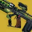
9 套合集·精准伤害
+6 套更新 2026.9.29多职业·烈日小棒猪meta为精准伤害场景准备的输出配装
01翻新剑狙双切·多人全职业术士伊邪那岐的重担02猎人单人金狙筒猎人星界夜鹰·隐秘追猎·黄金枪：神枪手03猎人多人金狙筒猎人星界夜鹰·隐秘追猎·黄金枪：神枪手 -
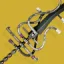
6 套合集·刀剑
+3 套更新 2026.9.24多职业·棱镜小棒猪meta01狼毒棱镜猎猎人命运眷顾·狼毒·暗影箭矢：狩猎陷阱02狼毒电泰坦泰坦陨星胸甲·狼毒·雷霆冲击03阴沉利爪术士逃逸艺术家·故我在·新星炸弹：灾变 -
8 套
合集·光芒复仇
+5 套更新 2026.9.24多职业·烈日小棒猪meta01叛贼光芒复仇猎人加拉诺碎片·叛贼·利刃弹幕02丰盈满溢光芒复仇 （1）大招猎人星界夜鹰·裂波者·黄金枪：神枪手03丰盈满溢光芒复仇 （2）输出猎人快速装弹松身裤·裂波者·黄金枪：神枪手 -
11 套
合集·裁决定论
+8 套更新 2026.9.24多职业·棱镜小棒猪meta近身输出DPS
01猎人裁决定论·棱镜药剂包版本 （1）金枪猎人星界夜鹰·牵引器火炮·黄金枪：神枪手02猎人裁决定论·棱镜药剂包版本 （2）输出猎人快速装弹松身裤·混乱无序·黄金枪：神枪手03猎人裁决定论·女王香炉版本 （1）金枪猎人星界夜鹰·牵引器火炮·黄金枪：神枪手 -
4 套
合集·级联点全明星威胁等级
+1 套更新 2026.9.24多职业·烈日小棒猪meta01寄生虫级联点威胁等级（1）猎人大招猎人加拉诺碎片·寄生虫·利刃弹幕02寄生虫级联点威胁等级（2）猎人输出猎人命运眷顾·寄生虫·利刃弹幕03寄生虫级联点威胁等级（3）泰坦推推泰坦牵引器火炮·黎明护罩 -
9 套
合集·真相
+6 套更新 2026.9.24多职业·棱镜小棒猪meta三职业真相使用
01猎人单人真相输出命运眷顾·真相·暗影箭矢：狩猎陷阱02猎人多人真相输出命运眷顾·真相·暗影箭矢：狩猎陷阱03术士单人真相·猎人日志版本输出血红炼金术·真相·新星炸弹：灾变 -
5 套
合集·千语/冷酷无情/大帝喷/大序曲
+2 套更新 2026.9.25多职业·烈日小棒猪强力01火术千语术士黎明副歌·千语·光焰之井02电泰坦千语泰坦陨星胸甲·千语·雷霆冲击03火术冷酷无情术士血红炼金术·冷酷无情·光焰之井 -
11 套
合集·大招/技能
+8 套更新 2026.9.25多职业·烈日小棒猪强力技能/超能输出
01火泰坦小锤泰坦虫神爱抚·牵引器火炮·烈焰战锤02冰泰坦猝死b计划/合成手泰坦没有B计划·牵引器火炮·冰川震击03圣火护心甲（大锤/小锤）泰坦圣火护心甲·牵引器火炮·燃烧锻锤 -
7 套
合集·完美悖论/星界虚无
+4 套更新 2026.9.24多职业·棱镜小棒猪强力01完美悖论棱镜猎人猎人星界夜鹰·牵引器火炮·黄金枪：神枪手02完美悖论推推火术术士汇编器战靴·牵引器火炮·光焰之井03寄生虫星界虚无火术·石板多人术士汇编器战靴·寄生虫·光焰之井